Langflow 사용 가이드
AI Agent Builder로 시작하는 LLM 애플리케이션 개발
Langflow User Guide
Building LLM Applications with the AI Agent Builder
Langflow 使用指南
使用 AI Agent Builder 开发 LLM 应用
Langflow 利用ガイド
AI Agent Builder で始める LLM アプリケーション開発
폐쇄망(Air-gapped) 환경 가이드
Air-gapped Environment Guide
封闭网络环境指南
閉域網環境ガイド
본 가이드는 폐쇄망(Air-gapped) 환경 기준입니다. 외부 클라우드 API(OpenAI, Anthropic 등)는 사용할 수 없으며, 사내 Private Cloud의 vLLM 기반 API를 OpenAI Compatible 컴포넌트로 연동합니다.
This guide targets air-gapped environments. External cloud APIs (OpenAI, Anthropic, etc.) are unavailable. We use OpenAI Compatible components to connect to vLLM APIs on our internal private cloud.
本指南针对封闭网络环境。外部云API不可用，使用 OpenAI Compatible 组件连接内部私有云的 vLLM API。
本ガイドは閉域網環境を対象としています。外部クラウドAPI（OpenAI、Anthropicなど）は利用できないため、社内プライベートクラウドの vLLM ベース API を OpenAI Compatible コンポーネントで連携します。
1. LLM & AI Agent 기본 이론
LLM (Large Language Model)이란?
LLM은 대규모 언어 모델의 약자로, 방대한 텍스트 데이터를 학습하여 자연어를 이해하고 생성하는 AI 모델입니다. 2017년 Google이 발표한 "Attention Is All You Need" 논문에서 제안된 Transformer 아키텍처를 기반으로 하며, GPT, Claude, Gemini, LLaMA 등이 대표적입니다.
LLM의 핵심 특징
- 텍스트 생성: 프롬프트에 대해 자연스러운 텍스트를 생성
- 문맥 이해: 긴 문맥을 파악하여 적절한 응답 생성
- 다양한 작업: 번역, 요약, 코드 생성, 질의응답 등
- 제한점: 학습 데이터 기반으로만 응답하며, 외부 시스템과의 상호작용은 자체적으로 불가능
AI Agent란?
AI Agent는 LLM + Tool + Skill + 자율적 추론/행동 루프를 결합한 시스템입니다. 단순 텍스트 생성을 넘어, 스스로 판단하고 외부 도구를 호출하여 실제 작업을 수행합니다.
AI Agent 생태계의 4가지 확장 개념
Tool (도구)
AI 시스템과 함께 사용하는 독립적인 외부 기능입니다. Agent가 직접 호출하여 LLM 자체로는 할 수 없는 작업을 수행합니다.
- Calculator: 수학 연산 수행
- Python REPL: Python 코드 실행
- API Request: 외부/내부 API 호출
- DB Query: 데이터베이스 검색
Agent는 사용자 요청을 분석한 후, 어떤 Tool을 사용할지 스스로 판단하여 호출합니다.
Skill (지식/지침)
AI 시스템이 특정 작업 시 자동으로 참조하는 지식 파일입니다. 코드 실행 없이 AI의 지식만 확장합니다.
- 예: "프론트엔드 디자인" Skill을 추가하면, UI 생성 요청 시 AI가 디자인 원칙을 자동 참조
- 설치가 간단하고, AI의 판단 기준과 전문 지식을 넓히는 역할
Plugin (확장 패키지)
명령어, 훅, 동작을 하나의 패키지로 묶은 확장입니다. AI 시스템의 행동 자체를 확장합니다.
- 예: 개발 워크플로 Plugin을 설치하면 TDD, 코드 리뷰, 체계적 디버깅 등 전문 워크플로 제공
- 마켓플레이스에서 설치하며, 여러 Skill + Tool을 번들로 제공
MCP (Model Context Protocol)
AI가 외부 서비스(DB, API, SaaS)에 직접 접근할 수 있게 해주는 프로토콜입니다.
- 예: Notion MCP를 설정하면 AI가 Notion 워크스페이스의 문서를 검색/업데이트
- 외부 서비스 연동에 API 키나 인증 정보가 필요할 수 있음
요약
Tool = Agent가 호출하는 독립 기능 | Skill = AI가 참조하는 지식 파일 | Plugin = 여러 기능을 묶은 확장 패키지 | MCP = 외부 서비스 연결 프로토콜
1. LLM & AI Agent Fundamentals
What is an LLM?
LLM stands for Large Language Model — an AI model trained on vast text data to understand and generate natural language. Based on the Transformer architecture from Google's "Attention Is All You Need" paper (2017). Examples: GPT, Claude, Gemini, LLaMA.
Key Characteristics
- Text Generation: Generates natural text from prompts
- Context Understanding: Comprehends long contexts for relevant responses
- Versatile Tasks: Translation, summarization, code generation, Q&A
- Limitations: Responds only from training data; cannot interact with external systems alone
What is an AI Agent?
An AI Agent combines LLM + Tools + Skills + an autonomous reasoning/action loop. Beyond text generation, it autonomously decides and invokes external tools to perform real tasks.
4 Extension Concepts in the AI Agent Ecosystem
Tool
Independent external functions used alongside the AI system. The Agent invokes them to perform tasks the LLM can't do on its own.
- Calculator: Math operations
- Python REPL: Code execution
- API Request: External/internal API calls
- DB Query: Database search
The Agent analyzes the request and autonomously decides which Tool to use.
Skill (Knowledge/Instructions)
Knowledge files the AI automatically references during specific tasks. Extends the AI's knowledge without code execution.
- Example: Adding a "Frontend Design" Skill makes the AI auto-reference design principles when generating UI
- Easy to install; expands the AI's judgment criteria and expertise
Plugin (Extension Package)
Bundled packages of commands, hooks, and behaviors that extend the AI system's actions.
- Example: A dev workflow Plugin provides TDD, code review, systematic debugging workflows
- Installed from marketplaces; bundles multiple Skills + Tools together
MCP (Model Context Protocol)
A protocol enabling the AI to directly access external services (databases, APIs, SaaS).
- Example: Setting up Notion MCP lets the AI search and update Notion workspace documents
- May require API keys or authentication for external service integration
Summary
Tool = Independent functions the Agent calls | Skill = Knowledge files the AI references | Plugin = Bundled extension packages | MCP = External service connection protocol
1. LLM 与 AI Agent 基础理论
什么是 LLM？
LLM 即大型语言模型，通过学习海量文本数据来理解和生成自然语言。基于 Google 2017 年发表的 "Attention Is All You Need" 论文提出的 Transformer 架构。代表模型：GPT、Claude、Gemini、LLaMA。
核心特点
- 文本生成：根据提示词生成自然文本
- 上下文理解：理解长文本上下文生成恰当回复
- 多种任务：翻译、摘要、代码生成、问答等
- 局限性：仅基于训练数据回复，无法自主与外部系统交互
什么是 AI Agent？
AI Agent 结合了 LLM + 工具（Tool）+ 技能（Skill）+ 自主推理/行动循环。超越简单文本生成，能自主判断并调用外部工具执行实际任务。
AI Agent 生态系统的 4 个扩展概念
Tool（工具）
与 AI 系统配合使用的独立外部功能。Agent 调用它们执行 LLM 自身无法完成的任务。
- Calculator：数学运算
- Python REPL：代码执行
- API Request：调用外部/内部 API
- DB Query：数据库检索
Skill（知识/指令）
AI 在特定任务中自动参考的知识文件。无需代码执行即可扩展 AI 的知识。
- 示例：添加"前端设计"Skill 后，AI 在生成 UI 时自动参考设计原则
- 安装简单；扩展 AI 的判断标准和专业知识
Plugin（扩展包）
将命令、钩子、行为打包为一个扩展。扩展 AI 系统的行为本身。
- 示例：开发工作流 Plugin 提供 TDD、代码审查、系统化调试等工作流
- 从市场安装；捆绑多个 Skill + Tool
MCP（Model Context Protocol）
使 AI 能直接访问外部服务（数据库、API、SaaS）的协议。
- 示例：设置 Notion MCP 后，AI 可搜索和更新 Notion 工作区文档
- 可能需要 API 密钥或认证信息
总结
Tool = Agent 调用的独立功能 | Skill = AI 参考的知识文件 | Plugin = 捆绑的扩展包 | MCP = 外部服务连接协议
1. LLM & AI Agent 基礎理論
LLM（大規模言語モデル）とは？
LLMは大規模言語モデルの略で、膨大なテキストデータを学習して自然言語を理解・生成するAIモデルです。2017年にGoogleが発表した "Attention Is All You Need" 論文で提案されたTransformerアーキテクチャを基盤としており、GPT、Claude、Gemini、LLaMAなどが代表例です。
LLMの主な特徴
- テキスト生成：プロンプトに対して自然なテキストを生成
- 文脈理解：長い文脈を把握して適切な応答を生成
- 多様なタスク：翻訳、要約、コード生成、質問応答など
- 制限：学習データに基づいてのみ回答し、外部システムとの連携は単体では不可能
AI Agentとは？
AI AgentはLLM + Tool + Skill + 自律的な推論・行動ループを組み合わせたシステムです。単純なテキスト生成を超え、自ら判断して外部ツールを呼び出し、実際のタスクを実行します。
AI Agentエコシステムの4つの拡張概念
Tool（ツール）
AIシステムと組み合わせて使う独立した外部機能です。AgentがLLM単体では実行できないタスクを行うために呼び出します。
- Calculator：数学演算の実行
- Python REPL：Pythonコードの実行
- API Request：外部・内部APIの呼び出し
- DB Query：データベース検索
Agentはユーザーのリクエストを分析した後、どのToolを使うかを自律的に判断して呼び出します。
Skill（知識・指示）
AIシステムが特定のタスク時に自動的に参照する知識ファイルです。コード実行なしにAIの知識だけを拡張します。
- 例：「フロントエンドデザイン」SkillをAIに追加すると、UI生成のリクエスト時にデザイン原則を自動参照
- 導入が簡単で、AIの判断基準と専門知識を広げる役割を担う
Plugin（拡張パッケージ）
コマンド、フック、動作をひとつのパッケージにまとめた拡張です。AIシステムの行動そのものを拡張します。
- 例：開発ワークフローPluginを導入すると、TDD・コードレビュー・体系的なデバッグなどの専門ワークフローを提供
- マーケットプレイスからインストールし、複数のSkill + Toolをバンドルとして提供
MCP（Model Context Protocol）
AIが外部サービス（DB、API、SaaS）に直接アクセスできるようにするプロトコルです。
- 例：Notion MCPを設定すると、AIがNotionワークスペースのドキュメントを検索・更新
- 外部サービス連携にAPIキーや認証情報が必要な場合あり
まとめ
Tool = Agentが呼び出す独立機能 | Skill = AIが参照する知識ファイル | Plugin = 複数機能をまとめた拡張パッケージ | MCP = 外部サービス接続プロトコル
AI Agent 아키텍처AI Agent ArchitectureAI Agent 架构AI Agent アーキテクチャ
Token: 반도체의 Memory처럼, AI의 기본 단위
반도체에서 Memory(메모리)가 데이터를 저장하는 기본 단위라면, LLM에서 Token은 언어를 처리하는 기본 단위입니다. 한 단어가 1~3개의 토큰으로 분해되며, 모든 비용과 성능이 토큰 수로 결정됩니다.
- 비용: API 과금 단위 = 토큰 수 (입력 + 출력)
- 속도: 토큰이 많을수록 처리 시간 증가
- Context Window: 모델이 한 번에 처리할 수 있는 최대 토큰 수 (예: 128K, 200K, 1M)
KV-Cache란?
CPU에 L1/L2 캐시가 있듯, LLM에는 KV-Cache(Key-Value Cache)가 있습니다. Transformer의 Attention 연산에서 이전에 계산한 Key와 Value를 저장해두어, 다음 토큰 생성 시 재계산을 생략합니다. 이를 통해 추론 속도가 크게 향상되지만, 대화가 길어질수록 캐시가 GPU 메모리를 많이 차지합니다.
Token: Like Memory in Semiconductors, the Basic Unit of AI
Just as Memory is the basic unit of data storage in semiconductors, Tokens are the basic unit of language processing in LLMs. A single word breaks down into 1-3 tokens, and all costs and performance are determined by token count.
- Cost: API billing unit = token count (input + output)
- Speed: More tokens = more processing time
- Context Window: Maximum tokens a model can process at once (e.g., 128K, 200K, 1M)
What is KV-Cache?
Just as CPUs have L1/L2 cache, LLMs have KV-Cache (Key-Value Cache). It stores previously computed Keys and Values from the Transformer's Attention operation, skipping recomputation when generating the next token. This dramatically speeds up inference, but the cache consumes more GPU memory as conversations get longer.
Token：如同半导体中的 Memory，AI 的基本单位
正如Memory是半导体中数据存储的基本单位，Token是 LLM 处理语言的基本单位。一个单词分解为 1-3 个 Token，所有成本和性能都由 Token 数量决定。
- 成本：API 计费单位 = Token 数量（输入 + 输出）
- 速度：Token 越多，处理时间越长
- 上下文窗口：模型一次可处理的最大 Token 数（如 128K、200K、1M）
什么是 KV-Cache？
就像 CPU 有 L1/L2 缓存，LLM 有 KV-Cache。它存储 Transformer Attention 运算中之前计算的 Key 和 Value，生成下一个 Token 时跳过重新计算。显著加速推理，但对话越长，缓存占用的 GPU 内存越多。
Token：半導体のMemoryのように、AIの基本単位
半導体でMemoryがデータ保存の基本単位であるように、LLMではTokenが言語処理の基本単位です。1つの単語が1〜3個のTokenに分解され、すべてのコストとパフォーマンスがToken数で決まります。
- コスト：API課金単位 = Token数（入力 + 出力）
- 速度：Tokenが多いほど処理時間が増加
- Context Window：モデルが一度に処理できる最大Token数（例：128K、200K、1M）
KV-Cacheとは？
CPUにL1/L2キャッシュがあるように、LLMにはKV-Cacheがあります。TransformerのAttention演算で以前計算したKeyとValueを保存し、次のToken生成時に再計算をスキップします。推論速度が大幅に向上しますが、会話が長くなるほどGPUメモリを多く消費します。
주요 모델 프로바이더 (2026.04 기준)
Major Model Providers (as of Apr 2026)
主要模型提供商（截至2026年4月）
主要モデルプロバイダー（2026年4月時点）
| 프로바이더 | Provider | 提供商 | プロバイダー | 최신 모델 | Latest Models | 最新模型 | 最新モデル | Context | 특징 | Highlights | 特点 | 特徴 |
|---|---|---|---|---|---|---|---|---|---|---|---|---|
| OpenAI | OpenAI | OpenAI | OpenAI | GPT-5, o3, o4-mini | GPT-5, o3, o4-mini | GPT-5, o3, o4-mini | GPT-5, o3, o4-mini | 1M | 추론 특화 o-시리즈 | Reasoning-focused o-series | 推理特化 o 系列 | 推論特化 o シリーズ |
| Anthropic | Anthropic | Anthropic | Anthropic | Claude Opus 4.7, Sonnet 4.7 | Claude Opus 4.7, Sonnet 4.7 | Claude Opus 4.7, Sonnet 4.7 | Claude Opus 4.7, Sonnet 4.7 | 1M | 코딩/분석 강점 | Strong in coding/analysis | 编码/分析优势 | コーディング/分析に強い |
| Gemini 2.5 Pro/Flash | Gemini 2.5 Pro/Flash | Gemini 2.5 Pro/Flash | Gemini 2.5 Pro/Flash | 1M | 멀티모달, 긴 컨텍스트 | Multimodal, long context | 多模态，长上下文 | マルチモーダル、長文脈 | ||||
| Meta (OSS) | Meta (OSS) | Meta (OSS) | Meta (OSS) | Llama 4 Scout/Maverick | Llama 4 Scout/Maverick | Llama 4 Scout/Maverick | Llama 4 Scout/Maverick | 10M | 오픈소스, MoE 아키텍처 | Open source, MoE architecture | 开源，MoE 架构 | オープンソース、MoEアーキテクチャ |
| Qwen (OSS) | Qwen (OSS) | Qwen (OSS) | Qwen (OSS) | Qwen 3.5 | Qwen 3.5 | Qwen 3.5 | Qwen 3.5 | 256K | 오픈소스, 다국어 강점 | Open source, multilingual | 开源，多语言优势 | オープンソース、多言語 |
| GLM (OSS) | GLM (OSS) | GLM (OSS) | GLM (OSS) | GLM-5 | GLM-5 | GLM-5 | GLM-5 | 200K | 오픈소스, 중국어/영어 강점 | Open source, Chinese/English | 开源，中英文优势 | オープンソース、中国語/英語 |
| Kimi (OSS) | Kimi (OSS) | Kimi (OSS) | Kimi (OSS) | Kimi K2.5 | Kimi K2.5 | Kimi K2.5 | Kimi K2.5 | 256K | 오픈소스, MoE 아키텍처 | Open source, MoE architecture | 开源，MoE 架构 | オープンソース、MoEアーキテクチャ |
폐쇄망(Air-gapped)에서의 선택
폐쇄망(Air-gapped)에서는 오픈소스 모델(Llama 4, Qwen 3.5, GLM-5, Kimi K2.5 등)을 vLLM으로 호스팅하여 사용합니다. OpenAI Compatible 컴포넌트로 동일하게 연동 가능합니다.
Air-gapped Choice
In air-gapped environments, use open-source models (Llama 4, Qwen 3.5, GLM-5, Kimi K2.5, etc.) hosted via vLLM. Same OpenAI Compatible component integration.
封闭网络中的选择
封闭网络中使用 vLLM 托管的开源模型（Llama 4、Qwen 3.5、GLM-5、Kimi K2.5 等）。通过 OpenAI Compatible 组件同样可以集成。
閉域網での選択
閉域網ではオープンソースモデル（Llama 4、Qwen 3.5、GLM-5、Kimi K2.5等）をvLLMでホスティングして使用します。OpenAI Compatibleコンポーネントで同様に連携可能です。
퀴즈
Quiz
测验
クイズ
AI Agent와 LLM의 가장 큰 차이점은 무엇인가요?
What is the biggest difference between an AI Agent and an LLM?
AI Agent 与 LLM 最大的区别是什么？
AI AgentとLLMの最も大きな違いは何ですか？
정답 보기
Show Answer
查看答案
答えを見る
AI Agent는 LLM과 달리 외부 Tool을 자율적으로 호출하여 실제 작업을 수행할 수 있습니다. LLM은 텍스트 생성만 가능하지만, Agent는 추론 → Tool 호출 → 결과 분석의 루프를 반복합니다.
Unlike an LLM, an AI Agent can autonomously call external Tools to perform real tasks. An LLM can only generate text, whereas an Agent repeatedly loops through reasoning → Tool call → result analysis.
与LLM不同，AI Agent能够自主调用外部工具执行实际任务。LLM仅能生成文本，而Agent会反复循环执行推理→工具调用→结果分析的过程。
AI AgentはLLMとは異なり、外部ToolをAIが自律的に呼び出して実際の作業を行えます。LLMはテキスト生成のみ可能ですが、Agentは推論→Tool呼び出し→結果分析のループを繰り返します。
2. 왜 Langflow인가
Langflow는 비주얼 드래그 앤 드롭으로 LLM 애플리케이션과 AI Agent를 구축할 수 있는 오픈소스 플랫폼입니다.
2. Why Langflow?
Langflow is an open-source platform for building LLM applications and AI Agents through visual drag-and-drop.
2. 为何选择 Langflow？
Langflow 是通过可视化拖拽构建 LLM 应用和 AI Agent 的开源平台。
2. なぜ Langflow か
Langflow はビジュアルなドラッグ＆ドロップで LLM アプリケーションと AI Agent を構築できるオープンソースプラットフォームです。
비주얼 빌더
Visual Builder
可视化构建
ビジュアルビルダー
드래그 앤 드롭으로 AI 파이프라인을 시각적으로 구성. 코드 없이도 Flow를 만들 수 있습니다.
Build AI pipelines visually with drag-and-drop. Create Flows without writing code.
拖拽方式可视化构建 AI 管道，无需编写代码即可创建 Flow。
ドラッグ＆ドロップで AI パイプラインをビジュアルに構成。コードなしで Flow を作成できます。
오픈소스
Open Source
开源
オープンソース
Apache 2.0 라이선스. 자유롭게 사용, 수정, 배포 가능. 폐쇄망(Air-gapped) 내 자체 호스팅이 가능합니다.
Apache 2.0 license. Free to use, modify, distribute. Self-hostable in air-gapped networks.
Apache 2.0 许可证。可自由使用、修改、分发。支持封闭网络内自托管。
Apache 2.0 ライセンス。自由に使用・修正・配布可能。閉域網内でのセルフホスティングも対応。
Python 확장성
Python Extensibility
Python 扩展性
Python 拡張性
Custom Component를 Python으로 작성하여 기존 라이브러리와 자유롭게 통합할 수 있습니다.
Write Custom Components in Python and freely integrate existing libraries.
使用 Python 编写自定义组件，自由集成现有库。
カスタムコンポーネントを Python で記述し、既存ライブラリと自由に統合できます。
OpenAI Compatible
OpenAI Compatible
OpenAI Compatible
OpenAI Compatible
사내 vLLM 등 OpenAI 호환 API를 제공하는 모델 서버와 바로 연동됩니다.
Connects directly to any OpenAI-compatible model server like internal vLLM.
可直接连接任何 OpenAI 兼容模型服务器（如内部 vLLM）。
社内 vLLM など OpenAI 互換 API を提供するモデルサーバーに直接連携できます。
Agent + Tool Mode
Agent + Tool Mode
Agent + 工具模式
Agent + Tool Mode
내장 Agent 컴포넌트와 Tool Mode로 자율 에이전트를 쉽게 구성할 수 있습니다.
Built-in Agent component and Tool Mode make it easy to build autonomous agents.
内置 Agent 组件和工具模式，轻松构建自主 Agent。
内蔵の Agent コンポーネントと Tool Mode で自律エージェントを簡単に構成できます。
API 자동 제공
Auto API Endpoint
自动提供 API
API 自動提供
만든 Flow를 OpenAI 호환 /responses API로 자동 노출. 다른 시스템에서 바로 호출 가능합니다.
Automatically exposes Flows as OpenAI-compatible /responses API for external systems.
自动将 Flow 暴露为 OpenAI 兼容 /responses API，可从外部系统直接调用。
作成した Flow を OpenAI 互換 /responses API として自動公開。他システムからすぐに呼び出せます。
3. Component 소개
Langflow에서 모든 것은 컴포넌트로 시작합니다. 컴포넌트는 Flow를 구성하는 블록이며, 좌측 사이드바에서 캔버스로 드래그하여 사용합니다. 각 컴포넌트의 왼쪽은 입력 포트, 오른쪽은 출력 포트이며, 호환되는 포트끼리 선으로 연결합니다.
주요 컴포넌트 카테고리
3. Components Overview
Everything in Langflow starts with components. Components are the building blocks of Flows — drag them from the sidebar onto the canvas. Each component has input ports on the left and output ports on the right, connected by wires between compatible ports.
Key Component Categories
3. 组件介绍
Langflow 中一切从组件开始。组件是构成 Flow 的积木——从侧边栏拖到画布上使用。每个组件左侧是输入端口，右侧是输出端口，通过连线连接兼容的端口。
主要组件类别
3. コンポーネント紹介
Langflow ではすべてがコンポーネントから始まります。コンポーネントは Flow を構成するブロックで、左サイドバーからキャンバスにドラッグして使用します。各コンポーネントの左側が入力ポート、右側が出力ポートで、互換性のあるポート同士を線で繋ぎます。
主要コンポーネントカテゴリ
Inputs / Outputs
사용자와의 대화 인터페이스. Chat Input으로 메시지를 받고, Chat Output으로 응답을 보냅니다. Chat Output이 있어야 Playground가 활성화됩니다.
User conversation interface. Chat Input receives messages, Chat Output sends responses. Playground requires Chat Output to be present.
用户对话界面。Chat Input 接收消息，Chat Output 发送回复。需要 Chat Output 才能激活 Playground。
ユーザーとの対話インターフェース。Chat Input でメッセージを受け取り、Chat Output で応答を送ります。Chat Output がないと Playground は有効化されません。
Models
LLM 모델과 연동하는 컴포넌트. 폐쇄망(Air-gapped)에서는 OpenAI Compatible 컴포넌트로 사내 vLLM 서버에 연결합니다. Base URL과 모델명만 설정하면 됩니다.
Connects to LLM models. In air-gapped environments, use OpenAI Compatible to connect to internal vLLM servers. Just set the Base URL and model name.
连接 LLM 模型。在封闭网络中，使用 OpenAI Compatible 连接内部 vLLM 服务器。只需设置 Base URL 和模型名称。
LLM モデルと連携するコンポーネント。閉域網では OpenAI Compatible コンポーネントで社内 vLLM サーバーに接続します。Base URL とモデル名を設定するだけです。
Prompts
시스템 프롬프트와 템플릿을 정의합니다. {변수명} 형식으로 동적 변수를 삽입할 수 있어, 다양한 상황에 맞는 프롬프트를 구성합니다.
Define system prompts and templates. Use {variable} syntax to insert dynamic values for context-specific prompts.
定义系统提示词和模板。使用 {变量名} 格式插入动态变量，构建适应各种场景的提示词。
システムプロンプトとテンプレートを定義します。{変数名} 形式で動的変数を挿入でき、様々な状況に合ったプロンプトを構成できます。
Tools & Agents
Tools: Calculator, Python REPL 등 Agent가 호출할 수 있는 도구.
Agent: Tool을 자율적으로 선택/호출하여 작업을 수행하는 에이전트 컴포넌트.
Tools: Calculator, Python REPL, etc. — callable by the Agent.
Agent: Autonomously selects and calls Tools to accomplish tasks.
Tools：Calculator、Python REPL 等可被 Agent 调用的工具。
Agent：自主选择和调用工具执行任务的 Agent 组件。
Tools：Calculator、Python REPL など Agent が呼び出せるツール。
Agent：Tool を自律的に選択・呼び出してタスクを実行するエージェントコンポーネント。
Memories
대화 기록을 저장하고 관리합니다. Chat Memory를 연결하면 Agent가 이전 대화 맥락을 기억하여 자연스러운 멀티턴 대화가 가능합니다.
Stores and manages conversation history. Connect Chat Memory so the Agent remembers prior context for natural multi-turn conversations.
存储和管理对话历史。连接 Chat Memory 使 Agent 记住之前的对话上下文，实现自然的多轮对话。
会話履歴を保存・管理します。Chat Memory を接続すると Agent が過去の会話の文脈を記憶し、自然なマルチターン対話が可能になります。
Vector Stores & Embeddings
텍스트를 벡터로 변환(Embedding)하고 저장/검색합니다. Milvus, OpenSearch, PostgreSQL(pgvector) 등을 지원합니다. RAG 파이프라인 구축에 사용됩니다.
Convert text to vectors (Embedding) and store/search them. Supports Milvus, OpenSearch, PostgreSQL (pgvector), and more. Used for building RAG pipelines.
将文本转换为向量（Embedding）并存储/检索。支持 Milvus、OpenSearch、PostgreSQL (pgvector) 等。用于构建 RAG 管道。
テキストをベクトルに変換（Embedding）して保存・検索します。Milvus、OpenSearch、PostgreSQL (pgvector) などをサポート。RAG パイプライン構築に使用します。
메인 페이지: Knowledge & Files
Langflow 메인 페이지에서는 Flow 외에도 Knowledge와 Files를 관리할 수 있습니다.
Main Page: Knowledge & Files
Beyond Flows, the Langflow main page lets you manage Knowledge and Files.
主页：Knowledge 和 Files
除了 Flow，Langflow 主页还可以管理 Knowledge 和 Files。
メインページ：Knowledge & Files
Flow 以外にも、Langflow メインページでは Knowledge と Files を管理できます。
Knowledge (문서 컬렉션)
메인 페이지의 Knowledge 탭에서 RAG에 사용할 문서 컬렉션을 관리합니다. 별도 VectorDB 없이도 Langflow 자체 Local ChromaDB에 임베딩을 적재하여 간단한 RAG를 구축할 수 있어, 초기 실험용으로 적합합니다.
Knowledge (Document Collections)
Manage document collections for RAG in the Knowledge tab on the main page. Without a separate VectorDB, Langflow stores embeddings in its built-in Local ChromaDB — ideal for initial experiments.
Knowledge（文档集合）
在主页的 Knowledge 标签中管理用于 RAG 的文档集合。无需单独的 VectorDB，Langflow 自带的 Local ChromaDB 即可存储嵌入——适合初期实验。
Knowledge（ドキュメントコレクション）
メインページの Knowledge タブで RAG 用のドキュメントコレクションを管理します。別途 VectorDB なしでも Langflow 自体の Local ChromaDB にエンベディングを格納でき、初期の実験に最適です。
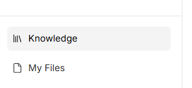
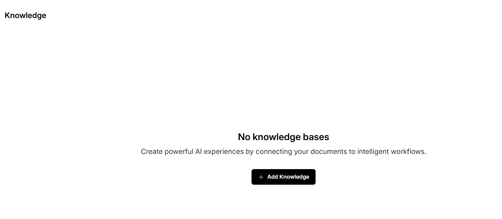
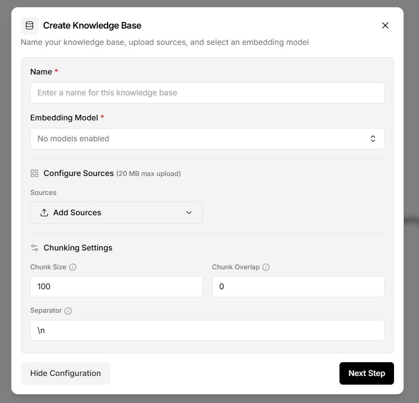
사전 설정 필수
Knowledge를 사용하려면 Global Model Provider에서 Embedding Model을 먼저 설정해야 합니다.
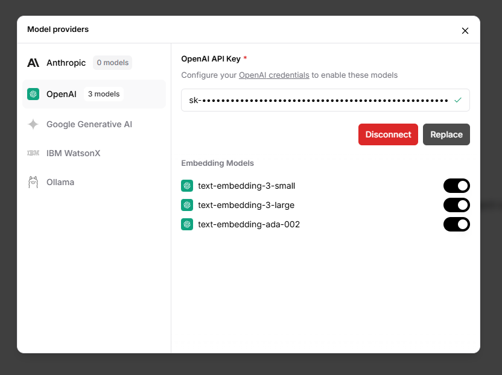
Required Setup
You must configure an Embedding Model in Global Model Provider before using Knowledge.
必须先设置
使用 Knowledge 前，需在 Global Model Provider 中先配置 Embedding Model。
事前設定必須
Knowledge を使用するには、Global Model Provider で Embedding Model を先に設定する必要があります。
Knowledge 생성 과정
- + Add Knowledge로 이름을 지정하고, Embedding Model과 Source(File 또는 Folder)를 추가합니다.
- Source 추가 후 Next Step에서 약 5개 Chunk를 미리보기할 수 있어, Chunk size와 delimiter를 간단히 테스트할 수 있습니다.
- Embedding 수행 시 Langflow 자체 Local ChromaDB에 적재됩니다.
Creating Knowledge
- Click + Add Knowledge, set a name, select Embedding Model, and add Source (File or Folder).
- After adding sources, the Next Step shows a preview of ~5 chunks to test chunk size and delimiter settings.
- Embeddings are stored in Langflow's built-in Local ChromaDB.
创建 Knowledge
- 点击 + Add Knowledge，设定名称，选择 Embedding Model，添加 Source（File 或 Folder）。
- 添加后下一步可预览约 5 个 Chunk，测试 Chunk size 和 delimiter 设置。
- Embedding 结果存储在 Langflow 自带的 Local ChromaDB 中。
Knowledge の作成
- + Add Knowledge で名前を指定し、Embedding Model と Source（File または Folder）を追加します。
- Source 追加後の Next Step で約5つの Chunk をプレビューでき、Chunk size と delimiter を簡単にテストできます。
- エンベディングは Langflow 自体の Local ChromaDB に格納されます。
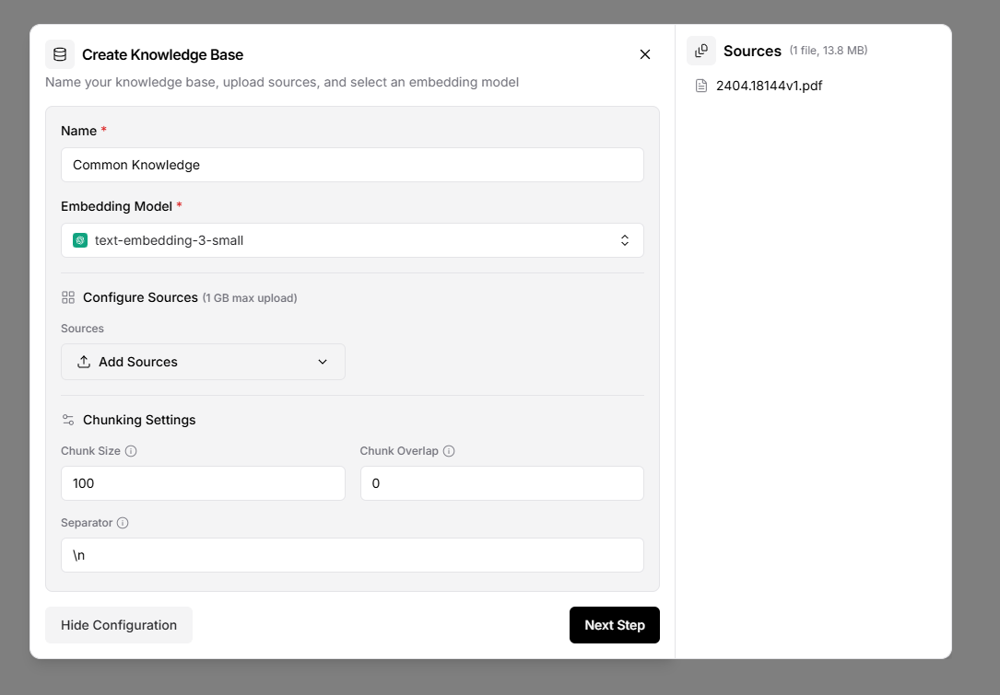
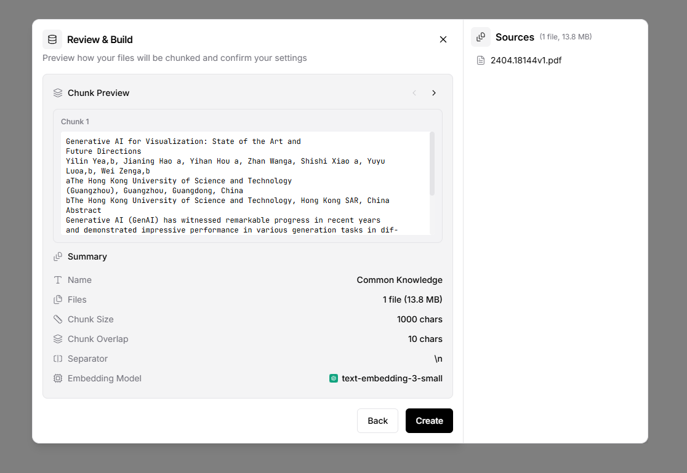
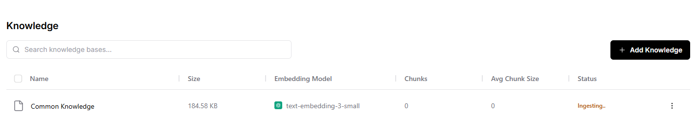
업데이트 제한
한번 업로드된 Embedding은 수정(Update)할 수 없고, 새로 작성만 가능합니다. Knowledge의 "Update" 기능은 기존 데이터를 덮어쓰는 것이 아니라 새로 생성하는 것입니다.
Update Limitation
Once uploaded, embeddings cannot be updated — only recreated. The "Update" function in Knowledge creates a new version rather than overwriting the existing data.
更新限制
已上传的 Embedding 无法更新，只能重新创建。Knowledge 的"Update"功能是新建而非覆盖现有数据。
更新制限
一度アップロードされた Embedding は更新できず、新規作成のみ可能です。Knowledge の「Update」機能は既存データの上書きではなく新規作成です。
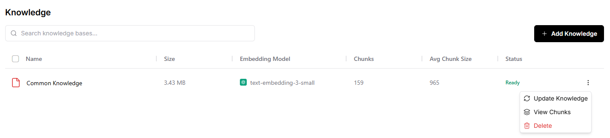
Flow 내에서 Knowledge Base 컴포넌트를 사용하면 생성한 Knowledge를 언제든지 참조할 수 있습니다.
Use the Knowledge Base component in your Flow to reference created Knowledge at any time.
在 Flow 中使用 Knowledge Base 组件可随时引用已创建的 Knowledge。
Flow 内で Knowledge Base コンポーネントを使うと、作成した Knowledge をいつでも参照できます。
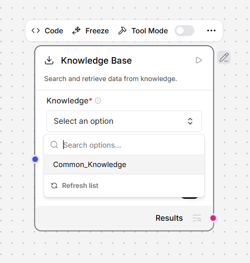
Files (파일 관리)
메인 페이지의 My Files 탭에서 Langflow 환경의 파일을 중앙 관리합니다.
Files (File Management)
Centrally manage files in the My Files tab on the main page.
Files（文件管理）
在主页的 My Files 标签中集中管理文件。
Files（ファイル管理）
メインページの My Files タブで Langflow 環境のファイルを一元管理します。
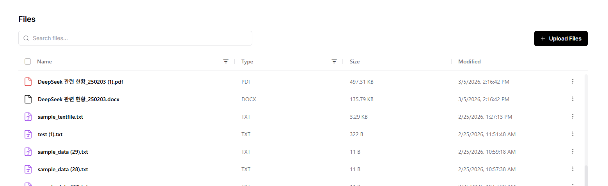
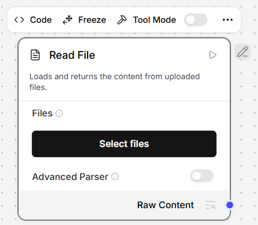
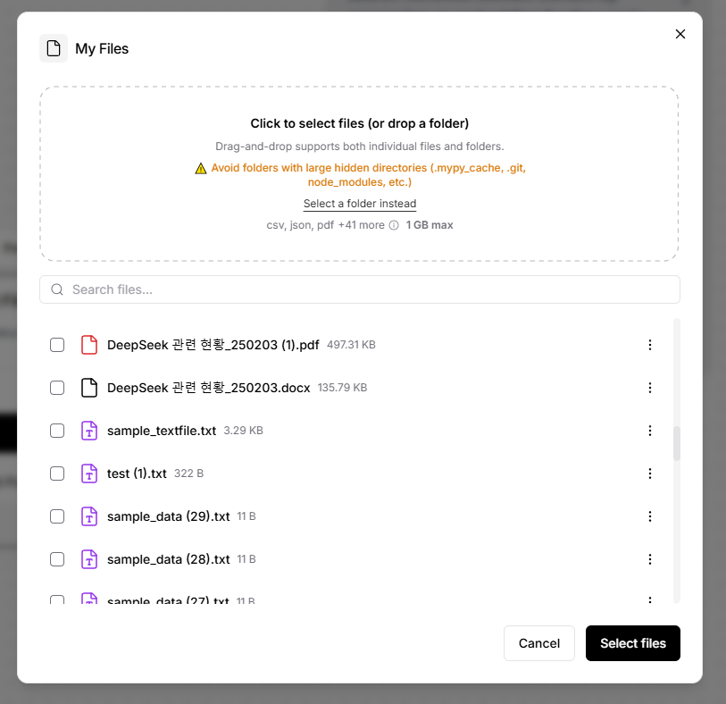
- PDF, CSV, TXT, JSON 등을 업로드하여 여러 Flow에서 공유 가능
- Flow에서 File 컴포넌트로 업로드한 파일을 직접 참조하여 데이터를 읽어올 수 있습니다.
- Read File 컴포넌트(위 두 번째 이미지)를 사용하면 My Files에 업로드된 파일을 Flow 안에서 직접 읽어올 수 있습니다. 파일 경로를 지정하거나 목록에서 선택하여 텍스트 데이터를 추출합니다.
- 파일을 한 곳에서 관리하므로, 동일한 파일을 여러 Flow에 중복 업로드할 필요가 없습니다.
- Upload PDF, CSV, TXT, JSON, etc. and share across multiple Flows
- Use the File component in Flows to directly reference uploaded files and read data.
- The Read File component (second image above) lets you read files uploaded to My Files directly within a Flow. Specify the file path or select from the list to extract text data.
- Centralized file management eliminates the need to upload the same file to multiple Flows.
- 上传 PDF、CSV、TXT、JSON 等，可在多个 Flow 中共享
- 在 Flow 中使用 File 组件直接引用已上传的文件来读取数据。
- Read File 组件（上方第二张图片）可在 Flow 中直接读取已上传到 My Files 的文件。指定文件路径或从列表中选择来提取文本数据。
- 集中管理文件，无需在多个 Flow 中重复上传相同文件。
- PDF、CSV、TXT、JSON などをアップロードし、複数の Flow で共有可能
- Flow の File コンポーネントでアップロードしたファイルを直接参照してデータを読み込めます。
- Read File コンポーネント（上の2番目の画像）を使うと、My Files にアップロードしたファイルを Flow 内で直接読み取れます。ファイルパスを指定するか、リストから選択してテキストデータを抽出します。
- ファイルを一箇所で管理するため、同じファイルを複数の Flow に重複アップロードする必要がありません。
Air-gapped 환경에서 vLLM 활용
Langflow는 기본적으로 Anthropic, Google Generative AI, IBM Watson X, Ollama, OpenAI 등 유료/외부 Model Provider를 지원합니다. 하지만 폐쇄망(Air-gapped) 환경에서는 외부 API에 접근할 수 없으므로, 사내 GPU 서버에서 vLLM으로 호스팅한 모델을 사용해야 합니다.
Langflow는 vLLM 및 vLLM Embeddings 컴포넌트를 기본 제공하여, OpenAI-compatible API 형태로 서빙되는 vLLM 서버에 바로 연결할 수 있습니다. 이를 통해 폐쇄망(Air-gapped)에서도 LLM 기반 텍스트 생성과 임베딩을 활용한 RAG 파이프라인을 구성할 수 있습니다.
Using vLLM in Air-gapped Environments
Langflow natively supports external Model Providers such as Anthropic, Google Generative AI, IBM Watson X, Ollama, and OpenAI. However, in air-gapped environments where external APIs are inaccessible, you need to use models hosted via vLLM on internal GPU servers.
Langflow provides built-in vLLM and vLLM Embeddings components that connect directly to vLLM servers serving OpenAI-compatible APIs. This enables LLM-based text generation and embedding-powered RAG pipelines even in air-gapped networks.
在离线环境中使用 vLLM
Langflow 默认支持 Anthropic、Google Generative AI、IBM Watson X、Ollama、OpenAI 等外部 Model Provider。但在离线（Air-gapped）环境中无法访问外部 API，需要使用内部 GPU 服务器上通过 vLLM 托管的模型。
Langflow 内置 vLLM 和 vLLM Embeddings 组件，可直接连接以 OpenAI-compatible API 形式提供服务的 vLLM 服务器。这使得在离线网络中也能构建基于 LLM 的文本生成和嵌入驱动的 RAG 管道。
エアギャップ環境での vLLM 活用
Langflow はデフォルトで Anthropic、Google Generative AI、IBM Watson X、Ollama、OpenAI などの外部 Model Provider をサポートしています。しかし、エアギャップ（閉域網）環境では外部 API にアクセスできないため、社内 GPU サーバーで vLLM を使用してホスティングしたモデルを利用する必要があります。
Langflow は vLLM および vLLM Embeddings コンポーネントを標準搭載しており、OpenAI-compatible API として提供される vLLM サーバーに直接接続できます。これにより、閉域網でも LLM ベースのテキスト生成やエンベディングを活用した RAG パイプラインを構築できます。
Provider 방식 vs vLLM 방식 비교
vLLM은 UC Berkeley의 Woosuk Kwon 등이 개발한 고성능 LLM 추론 엔진입니다 (논문 | 공식 문서). PagedAttention 기법으로 GPU 메모리를 효율적으로 관리하며, OpenAI-compatible API를 제공하여 다양한 오픈소스 모델을 쉽게 서빙할 수 있습니다.
Langflow에는 범용 Embedding Model과 Language Model 컴포넌트도 있습니다. 이들은 Provider 드롭다운에서 Anthropic, OpenAI 등 외부 서비스를 선택하는 방식입니다. 반면 vLLM 컴포넌트는 사내 GPU에서 직접 호스팅한 모델의 API Base URL을 지정하여 연결하므로, 폐쇄망(Air-gapped)에서 외부 Provider 없이 사용할 수 있습니다.
Provider vs vLLM Comparison
vLLM is a high-performance LLM inference engine developed by Woosuk Kwon et al. at UC Berkeley (paper | docs). It uses PagedAttention for efficient GPU memory management and provides an OpenAI-compatible API for serving various open-source models.
Langflow also provides generic Embedding Model and Language Model components, which select external services like Anthropic or OpenAI from a Provider dropdown. In contrast, vLLM components connect by specifying the API Base URL of models self-hosted on internal GPUs — usable in air-gapped networks without external providers.
Provider 方式 vs vLLM 方式对比
vLLM 是由加州大学伯克利分校的 Woosuk Kwon 等人开发的高性能 LLM 推理引擎（论文 | 官方文档）。它使用 PagedAttention 技术高效管理 GPU 内存，并提供 OpenAI-compatible API 来服务各种开源模型。
Langflow 还提供通用的 Embedding Model 和 Language Model 组件，通过 Provider 下拉菜单选择 Anthropic、OpenAI 等外部服务。而 vLLM 组件通过指定内部 GPU 服务器上自托管模型的 API Base URL 连接——可在无外部 Provider 的离线网络中使用。
Provider 方式 vs vLLM 方式の比較
vLLM は UC Berkeley の Woosuk Kwon らが開発した高性能 LLM 推論エンジンです（論文 | 公式ドキュメント）。PagedAttention で GPU メモリを効率的に管理し、OpenAI-compatible API で様々なオープンソースモデルを簡単にサービングできます。
Langflow には汎用の Embedding Model と Language Model コンポーネントもあります。これらは Provider ドロップダウンから Anthropic や OpenAI などの外部サービスを選択する方式です。一方、vLLM コンポーネントは社内 GPU でセルフホストしたモデルの API Base URL を指定して接続するため、外部 Provider なしの閉域網で使用できます。
Embedding Model
Provider 드롭다운에서 외부 서비스를 선택하여 임베딩을 생성합니다. 인터넷 연결과 API Key가 필요합니다.
Select an external provider from the dropdown to generate embeddings. Requires internet access and an API key.
从 Provider 下拉菜单选择外部服务生成嵌入。需要网络连接和 API Key。
Provider ドロップダウンから外部サービスを選択してエンベディングを生成します。インターネット接続と API Key が必要です。
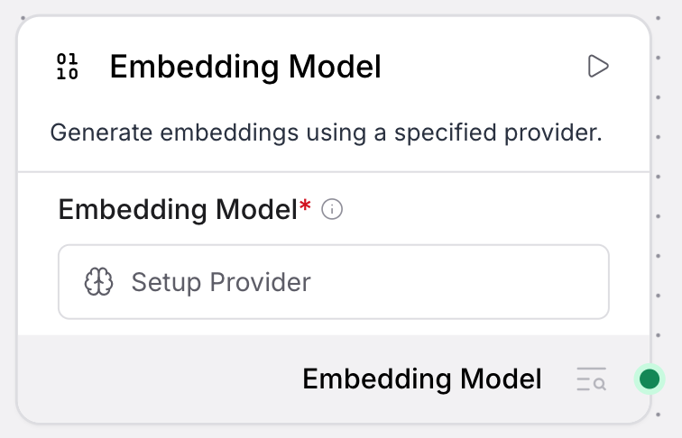
vLLM Embeddings
사내 vLLM 서버의 API Base URL과 Model Name(예: bge-m3)을 직접 지정합니다. 폐쇄망(Air-gapped)에서 외부 Provider 없이 임베딩 생성이 가능합니다.
Directly specify the API Base URL and Model Name (e.g., bge-m3) of your internal vLLM server. Enables embedding generation in air-gapped networks without external providers.
直接指定内部 vLLM 服务器的 API Base URL 和 Model Name（例：bge-m3）。无需外部 Provider 即可在离线网络中生成嵌入。
社内 vLLM サーバーの API Base URL と Model Name（例：bge-m3）を直接指定します。外部 Provider なしで閉域網でのエンベディング生成が可能です。
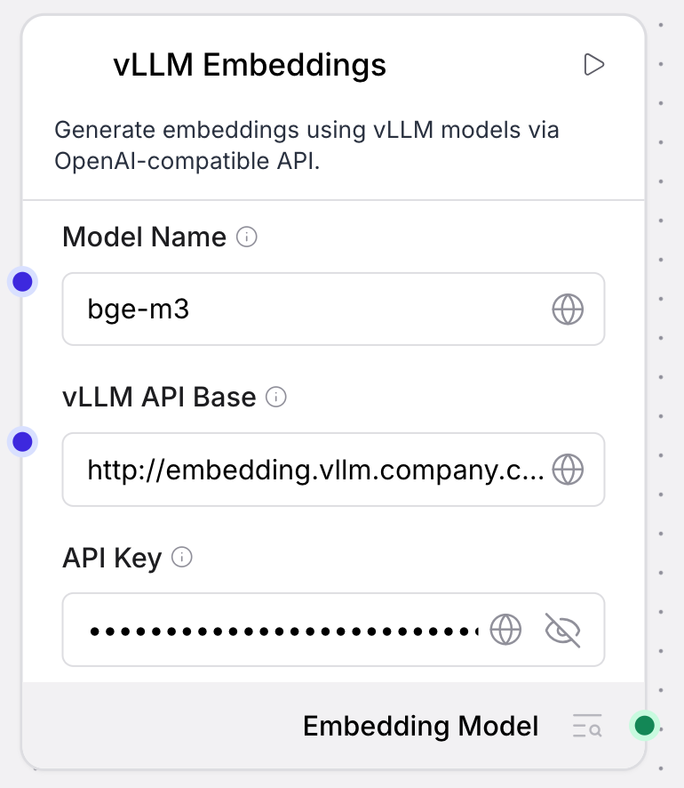
Language Model
Provider 드롭다운에서 외부 LLM 서비스를 선택하여 텍스트를 생성합니다. 인터넷 연결과 API Key가 필요합니다.
Select an external LLM provider from the dropdown for text generation. Requires internet access and an API key.
从 Provider 下拉菜单选择外部 LLM 服务生成文本。需要网络连接和 API Key。
Provider ドロップダウンから外部 LLM サービスを選択してテキストを生成します。インターネット接続と API Key が必要です。
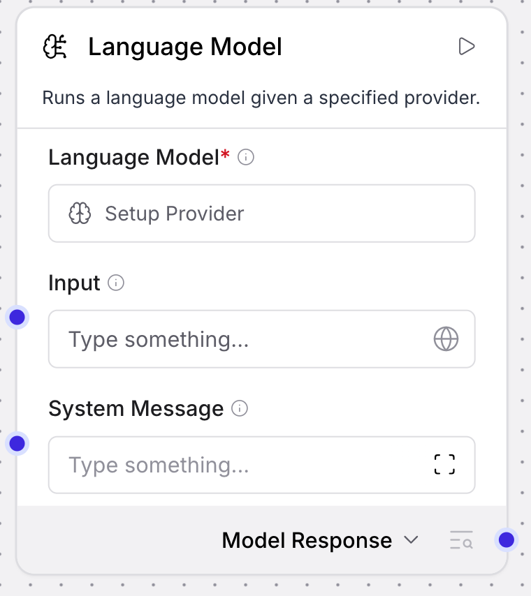
vLLM
사내 vLLM 서버의 API Base URL과 Model Name(예: GLM-5)을 직접 지정합니다. Temperature 등 파라미터도 조절 가능합니다. 폐쇄망(Air-gapped)에서 LLM 텍스트 생성이 가능합니다.
Directly specify the API Base URL and Model Name (e.g., GLM-5) of your internal vLLM server. Adjust parameters like Temperature. Enables LLM text generation in air-gapped networks.
直接指定内部 vLLM 服务器的 API Base URL 和 Model Name（例：GLM-5）。可调节 Temperature 等参数。在离线网络中实现 LLM 文本生成。
社内 vLLM サーバーの API Base URL と Model Name（例：GLM-5）を直接指定します。Temperature などのパラメータも調整可能です。閉域網での LLM テキスト生成が可能です。
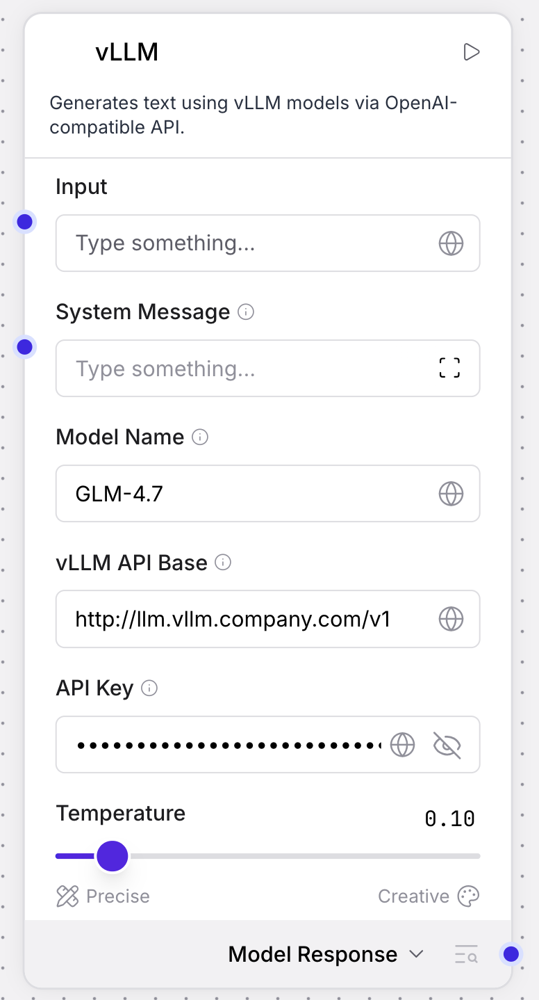
4. Custom Component 만들기
기본 컴포넌트로 부족할 때, Python으로 Custom Component를 직접 작성합니다. 가장 기초부터 시작해 봅시다.
4. Building Custom Components
When built-in components aren't enough, write Custom Components in Python. Let's start from the basics.
4. 创建自定义组件
当内置组件不足时，使用 Python 编写自定义组件。从最基础开始。
4. カスタムコンポーネントの作成
組み込みコンポーネントで不足する場合は、Python でカスタムコンポーネントを直接作成します。まず基礎から始めましょう。
Step 1. 가장 기본 (Input 1개 + Output 1개)
입력 텍스트를 그대로 출력하는 최소 컴포넌트입니다.
Step 1. The Simplest (1 Input + 1 Output)
A minimal component that passes input text through.
Step 1. 最基本（1个输入 + 1个输出）
将输入文本原样输出的最简组件。
Step 1. 最も基本的な構成（Input 1つ + Output 1つ）
入力テキストをそのまま出力する最小構成のコンポーネントです。
from langflow.custom import Component
from langflow.io import StrInput, Output
from langflow.schema import Data
class HelloComponent(Component):
display_name = "안녕 컴포넌트"
description = "입력을 그대로 출력하는 기본 컴포넌트"
inputs = [
StrInput(name="input_text", display_name="입력 텍스트", required=True),
]
outputs = [
Output(display_name="결과", name="result", method="run"),
]
def run(self) -> Data:
self.status = self.input_text
return Data(data={"text": self.input_text})from langflow.custom import Component
from langflow.io import StrInput, Output
from langflow.schema import Data
class HelloComponent(Component):
display_name = "Hello Component"
description = "A basic component that passes input through"
inputs = [
StrInput(name="input_text", display_name="Input Text", required=True),
]
outputs = [
Output(display_name="Result", name="result", method="run"),
]
def run(self) -> Data:
self.status = self.input_text
return Data(data={"text": self.input_text})from langflow.custom import Component
from langflow.io import StrInput, Output
from langflow.schema import Data
class HelloComponent(Component):
display_name = "你好组件"
description = "将输入原样输出的基本组件"
inputs = [
StrInput(name="input_text", display_name="输入文本", required=True),
]
outputs = [
Output(display_name="结果", name="result", method="run"),
]
def run(self) -> Data:
self.status = self.input_text
return Data(data={"text": self.input_text})from langflow.custom import Component
from langflow.io import StrInput, Output
from langflow.schema import Data
class HelloComponent(Component):
display_name = "ハローコンポーネント"
description = "入力をそのまま出力する基本コンポーネント"
inputs = [
StrInput(name="input_text", display_name="入力テキスト", required=True),
]
outputs = [
Output(display_name="結果", name="result", method="run"),
]
def run(self) -> Data:
self.status = self.input_text
return Data(data={"text": self.input_text})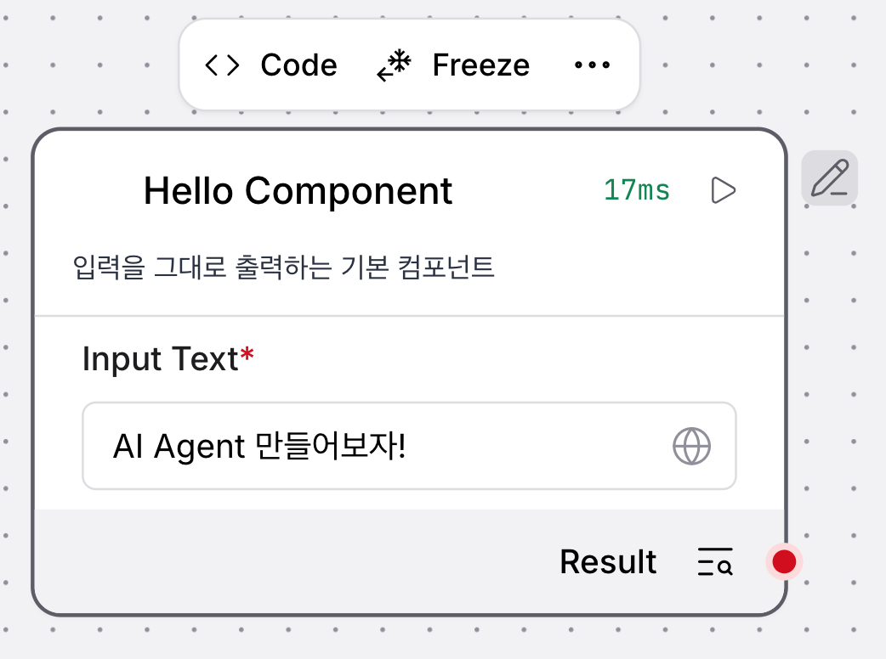
StrInput & Output 인자 설명
Custom Component의 inputs와 outputs에서 사용하는 주요 인자(argument)를 정리합니다.
StrInput 주요 인자
StrInput & Output Arguments
Key arguments used in Custom Component inputs and outputs.
StrInput Arguments
StrInput 和 Output 参数说明
自定义组件 inputs 和 outputs 中使用的主要参数。
StrInput 参数
StrInput と Output の引数説明
カスタムコンポーネントの inputs と outputs で使用する主要な引数をまとめます。
StrInput の主要引数
| 인자 | Argument | 参数 | 引数 | 필수 | Required | 必需 | 必須 | 설명 | Description | 说明 | 説明 |
|---|---|---|---|---|---|---|---|---|---|---|---|
name | name | name | name | O | Yes | 是 | ○ | Python 변수명. self.name으로 접근 | Python variable name. Access via self.name | Python 变量名。通过 self.name 访问 | Python 変数名。self.name でアクセス |
display_name | display_name | display_name | display_name | O | Yes | 是 | ○ | UI에 표시되는 이름 | Label shown in the UI | UI 中显示的名称 | UI に表示される名前 |
info | info | info | info | X | No | 否 | × | 입력 필드 아래 표시되는 설명 텍스트 | Help text shown below the input field | 输入字段下方的说明文本 | 入力フィールド下部に表示される説明テキスト |
required | required | required | required | X | No | 否 | × | True면 필수 입력 (기본: False) | True = mandatory (default: False) | True 为必填（默认：False） | True で必須入力（デフォルト：False） |
value | value | value | value | X | No | 否 | × | 기본값 설정 | Default value | 默认值 | デフォルト値の設定 |
advanced | advanced | advanced | advanced | X | No | 否 | × | True면 고급 설정에 숨김 | True = hidden in advanced section | True 则隐藏在高级设置中 | True で詳細設定に非表示 |
Output 주요 인자
Output Arguments
Output 参数
Output の主要引数
| 인자 | Argument | 参数 | 引数 | 설명 | Description | 说明 | 説明 |
|---|---|---|---|---|---|---|---|
display_name | display_name | display_name | display_name | UI에 표시되는 출력 포트 이름 | Label shown on the output port in UI | UI 中输出端口显示的名称 | UI に表示される出力ポートの名前 |
name | name | name | name | 출력 식별자 (코드 내부에서 참조) | Output identifier (referenced internally) | 输出标识符（内部引用） | 出力識別子（コード内部から参照） |
method | method | method | method | 이 출력이 호출할 메서드 이름 (문자열) | Method name this output will invoke (string) | 此输出调用的方法名称（字符串） | この出力が呼び出すメソッド名（文字列） |
Step 2. 처리 로직 추가 (Input 2개)
두 번째 Input을 추가하여 텍스트를 가공합니다.
Step 2. Adding Logic (2 Inputs)
Add a second input with processing logic.
Step 2. 添加处理逻辑（2个输入）
添加第二个输入并加入处理逻辑。
Step 2. 処理ロジックの追加（Input 2つ）
2つ目の Input を追加してテキストを加工します。
from langflow.custom import Component
from langflow.io import StrInput, Output
from langflow.schema import Data
class TextProcessor(Component):
display_name = "텍스트 처리기"
description = "접두사를 붙여 텍스트를 처리합니다"
inputs = [
StrInput(name="input_text", display_name="입력 텍스트", required=True),
StrInput(name="prefix", display_name="접두사", value="[처리됨]"),
]
outputs = [
Output(display_name="처리 결과", name="processed", method="process_text"),
]
def process_text(self) -> Data:
result = f"{self.prefix} {self.input_text}"
self.status = result
return Data(data={"text": result})from langflow.custom import Component
from langflow.io import StrInput, Output
from langflow.schema import Data
class TextProcessor(Component):
display_name = "Text Processor"
description = "Processes text by adding a prefix"
inputs = [
StrInput(name="input_text", display_name="Input Text", required=True),
StrInput(name="prefix", display_name="Prefix", value="[Processed]"),
]
outputs = [
Output(display_name="Result", name="processed", method="process_text"),
]
def process_text(self) -> Data:
result = f"{self.prefix} {self.input_text}"
self.status = result
return Data(data={"text": result})from langflow.custom import Component
from langflow.io import StrInput, Output
from langflow.schema import Data
class TextProcessor(Component):
display_name = "文本处理器"
description = "通过添加前缀处理文本"
inputs = [
StrInput(name="input_text", display_name="输入文本", required=True),
StrInput(name="prefix", display_name="前缀", value="[已处理]"),
]
outputs = [
Output(display_name="处理结果", name="processed", method="process_text"),
]
def process_text(self) -> Data:
result = f"{self.prefix} {self.input_text}"
self.status = result
return Data(data={"text": result})from langflow.custom import Component
from langflow.io import StrInput, Output
from langflow.schema import Data
class TextProcessor(Component):
display_name = "テキスト処理器"
description = "接頭辞を付けてテキストを処理します"
inputs = [
StrInput(name="input_text", display_name="入力テキスト", required=True),
StrInput(name="prefix", display_name="接頭辞", value="[処理済み]"),
]
outputs = [
Output(display_name="処理結果", name="processed", method="process_text"),
]
def process_text(self) -> Data:
result = f"{self.prefix} {self.input_text}"
self.status = result
return Data(data={"text": result})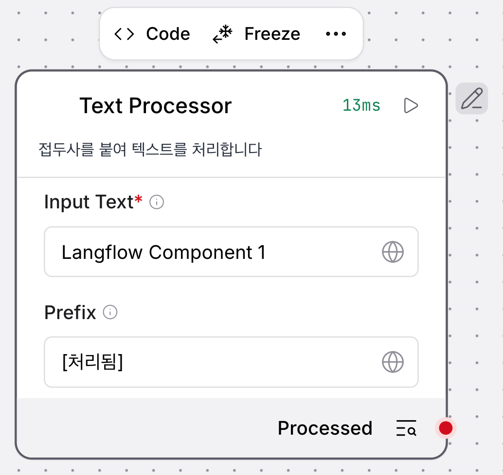
Step 3. 여러 Output 추가
하나의 컴포넌트에서 여러 Output을 제공할 수 있습니다.
Step 3. Multiple Outputs
A single component can provide multiple outputs.
Step 3. 多个输出
一个组件可以提供多个输出。
Step 3. 複数の Output の追加
1つのコンポーネントから複数の Output を提供できます。
from langflow.custom import Component
from langflow.io import StrInput, Output
from langflow.schema import Data
class TextAnalyzer(Component):
display_name = "텍스트 분석기"
description = "텍스트를 분석하여 여러 결과를 출력합니다"
inputs = [
StrInput(name="input_text", display_name="입력 텍스트", required=True),
]
outputs = [
Output(display_name="원본", name="original", method="get_original"),
Output(display_name="대문자", name="upper", method="get_upper"),
Output(display_name="통계", name="stats", method="get_stats"),
]
def get_original(self) -> Data:
return Data(data={"text": self.input_text})
def get_upper(self) -> Data:
return Data(data={"text": self.input_text.upper()})
def get_stats(self) -> Data:
stats = f"글자수: {len(self.input_text)}, 단어수: {len(self.input_text.split())}"
self.status = stats
return Data(data={"text": stats})from langflow.custom import Component
from langflow.io import StrInput, Output
from langflow.schema import Data
class TextAnalyzer(Component):
display_name = "Text Analyzer"
description = "Analyzes text and outputs multiple results"
inputs = [
StrInput(name="input_text", display_name="Input Text", required=True),
]
outputs = [
Output(display_name="Original", name="original", method="get_original"),
Output(display_name="Uppercase", name="upper", method="get_upper"),
Output(display_name="Statistics", name="stats", method="get_stats"),
]
def get_original(self) -> Data:
return Data(data={"text": self.input_text})
def get_upper(self) -> Data:
return Data(data={"text": self.input_text.upper()})
def get_stats(self) -> Data:
stats = f"Characters: {len(self.input_text)}, Words: {len(self.input_text.split())}"
self.status = stats
return Data(data={"text": stats})from langflow.custom import Component
from langflow.io import StrInput, Output
from langflow.schema import Data
class TextAnalyzer(Component):
display_name = "文本分析器"
description = "分析文本并输出多个结果"
inputs = [
StrInput(name="input_text", display_name="输入文本", required=True),
]
outputs = [
Output(display_name="原文", name="original", method="get_original"),
Output(display_name="大写", name="upper", method="get_upper"),
Output(display_name="统计", name="stats", method="get_stats"),
]
def get_original(self) -> Data:
return Data(data={"text": self.input_text})
def get_upper(self) -> Data:
return Data(data={"text": self.input_text.upper()})
def get_stats(self) -> Data:
stats = f"字符数: {len(self.input_text)}, 词数: {len(self.input_text.split())}"
self.status = stats
return Data(data={"text": stats})from langflow.custom import Component
from langflow.io import StrInput, Output
from langflow.schema import Data
class TextAnalyzer(Component):
display_name = "テキスト分析器"
description = "テキストを分析して複数の結果を出力します"
inputs = [
StrInput(name="input_text", display_name="入力テキスト", required=True),
]
outputs = [
Output(display_name="原文", name="original", method="get_original"),
Output(display_name="大文字", name="upper", method="get_upper"),
Output(display_name="統計", name="stats", method="get_stats"),
]
def get_original(self) -> Data:
return Data(data={"text": self.input_text})
def get_upper(self) -> Data:
return Data(data={"text": self.input_text.upper()})
def get_stats(self) -> Data:
stats = f"文字数: {len(self.input_text)}, 単語数: {len(self.input_text.split())}"
self.status = stats
return Data(data={"text": stats})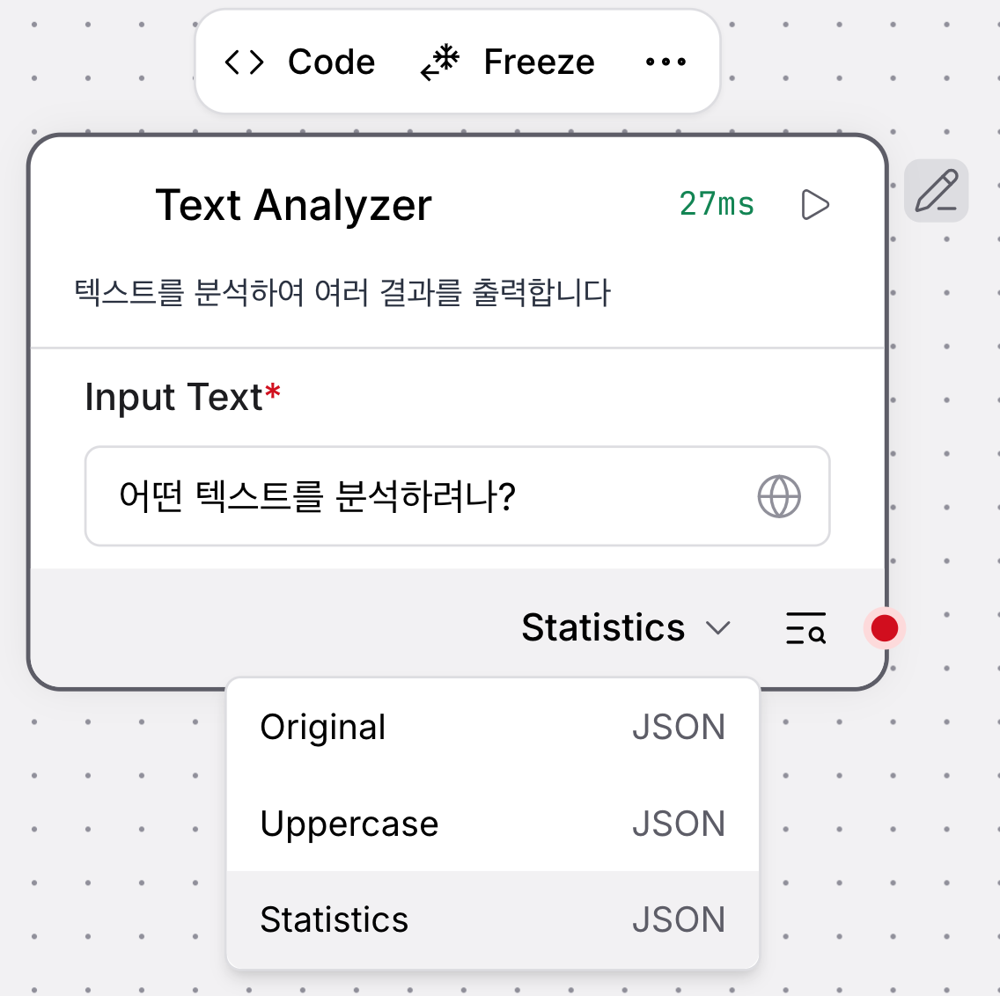
Step 4. Tool Mode로 Agent에 연결하기
Custom Component를 Tool Mode로 전환하면 Agent가 자율적으로 호출할 수 있는 도구가 됩니다. 코드에서 tool_mode=True를 Input에 설정하면 해당 입력이 Tool로 노출됩니다.
Tool Mode 활성화
컴포넌트 헤더 메뉴(⋮) → Tool Mode ON → Toolset 출력 포트 생성 → Agent의 Tools 입력에 연결
Step 4. Connecting to Agent via Tool Mode
Converting to Tool Mode turns your component into a tool the Agent can invoke. Set tool_mode=True on Inputs to expose them as tool parameters.
Activating Tool Mode
Header menu (⋮) → Tool Mode ON → Toolset output port appears → Connect to Agent's Tools input
Step 4. 通过工具模式连接 Agent
转换为工具模式后，组件成为 Agent 可自主调用的工具。在 Input 中设置 tool_mode=True 来将其暴露为工具参数。
激活工具模式
标题栏菜单（⋮） → 开启 Tool Mode → 出现 Toolset 输出端口 → 连接到 Agent 的 Tools 输入
Step 4. Tool Mode で Agent に接続する
カスタムコンポーネントを Tool Mode に切り替えると、Agent が自律的に呼び出せるツールになります。Input に tool_mode=True を設定すると、その入力がツールパラメーターとして公開されます。
Tool Mode の有効化
コンポーネントヘッダーのメニュー（⋮） → Tool Mode ON → Toolset 出力ポートが生成 → Agent の Tools 入力に接続
from langflow.custom import Component
from langflow.io import StrInput, Output
from langflow.schema import Data
class WordCounter(Component):
display_name = "Word Counter"
# description: Agent가 이 Tool을 선택할지 판단하는 핵심 텍스트
description = "주어진 텍스트의 단어 수와 글자 수를 세어 반환합니다"
inputs = [
StrInput(
name="text", # Agent에게 노출되는 파라미터명
display_name="Text",
info="분석할 텍스트",
required=True,
tool_mode=True, # Tool Mode에서 이 Input을 도구 파라미터로 노출
),
]
outputs = [
Output(
display_name="Count Result",
name="count_words", # Agent에게 보이는 Action 이름 (slug)
method="count_words",
),
]
def count_words(self) -> Data:
words = len(self.text.split())
chars = len(self.text)
result = f"단어 수: {words}, 글자 수: {chars}"
self.status = result
return Data(data={"text": result, "words": words, "chars": chars})name(slug)이 중요합니다
Output의 name은 Agent가 보는 Action 이름(slug)이 됩니다. 위 예시에서 name="count_words"로 설정하면 Agent의 Actions 목록에 COUNT_WORDS로 표시됩니다. Agent가 어떤 동작인지 직관적으로 이해할 수 있도록 명확한 snake_case 이름을 사용하세요.
TIP: description + name 모두 중요
description: Agent가 "이 Tool을 호출할지" 판단하는 근거
name (slug): Agent가 "어떤 Action을 실행할지" 식별하는 ID
둘 다 구체적이고 명확하게 작성하세요.
name (slug) matters
The Output's name becomes the Action name (slug) the Agent sees. Setting name="count_words" shows as COUNT_WORDS in the Agent's Actions list. Use clear snake_case names so the Agent understands what each action does.
TIP: Both description + name matter
description: How the Agent decides "whether to call this Tool"
name (slug): How the Agent identifies "which Action to execute"
Make both specific and clear.
name（slug）很重要
Output 的 name 会成为 Agent 看到的 Action 名称（slug）。设置 name="count_words" 后，在 Agent 的 Actions 列表中显示为 COUNT_WORDS。使用清晰的 snake_case 命名。
提示：description 和 name 都重要
description：Agent 判断"是否调用此工具"的依据
name（slug）：Agent 识别"执行哪个 Action"的 ID
两者都要具体明确。
name（slug）が重要です
Output の name は Agent が見る Action 名（slug）になります。name="count_words" と設定すると、Agent の Actions リストに COUNT_WORDS と表示されます。Agent が何の動作かを直感的に理解できるよう、明確な snake_case の名前を使用してください。
TIP：description と name はどちらも重要
description：Agent が「このToolを呼び出すか」を判断する根拠
name（slug）：Agent が「どの Action を実行するか」を識別する ID
どちらも具体的かつ明確に記述してください。
↑ Toolset → Agent Tools
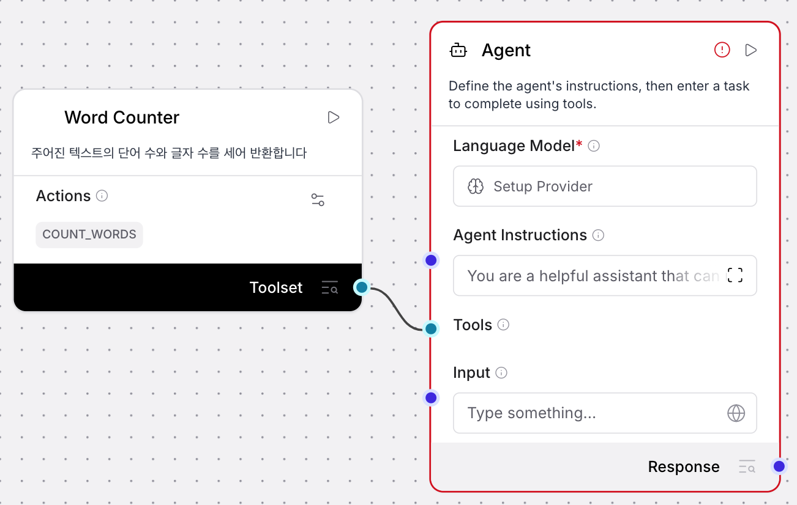
Message vs Data 이해하기
Custom Component를 만들 때, 출력 타입으로 Message와 Data 중 하나를 선택합니다. 이 둘의 차이를 이해하는 것이 중요합니다.
Understanding Message vs Data
When building Custom Components, you choose between Message and Data as output types. Understanding the difference is important.
理解 Message 与 Data
创建自定义组件时，需要在 Message 和 Data 之间选择输出类型。理解两者的区别很重要。
Message と Data の理解
カスタムコンポーネントを作成する際、出力タイプとして Message と Data のどちらかを選択します。この違いを理解することが重要です。
| 구분 | Aspect | 区分 | 区分 | Message | Data | ||||||
|---|---|---|---|---|---|---|---|---|---|---|---|
| 용도 | Purpose | 用途 | 用途 | 대화 메시지 전달 (채팅) | Chat message delivery | 传递对话消息（聊天） | 会話メッセージの配信（チャット） | 구조화된 데이터 전달 (범용) | Structured data passing (general) | 传递结构化数据（通用） | 構造化データの受け渡し（汎用） |
| 속성 | Properties | 属性 | 属性 | text, sender, sender_name, session_id |
data (dict), text_key |
||||||
| Chat Output | Chat Output | Chat Output | Chat Output | 직접 연결 가능 | Directly connectable | 可直接连接 | 直接接続可能 | 변환 필요 (Parse Data 등) | Needs conversion (Parse Data etc.) | 需要转换（Parse Data 等） | 変換が必要（Parse Data など） |
| 사용 시점 | When to use | 使用场景 | 使用タイミング | 사용자에게 보여줄 응답 | User-facing responses | 展示给用户的回复 | ユーザーに表示する応答 | 내부 데이터 가공/전달 | Internal data processing | 内部数据处理/传递 | 内部データの加工・受け渡し |
from langflow.schema.message import Message
from langflow.schema import Data
# Message: 채팅 응답용 (Chat Output에 직접 연결)
def chat_response(self) -> Message:
return Message(text="안녕하세요! 반갑습니다.")
# Data: 구조화된 데이터 전달용 (내부 처리)
def process_data(self) -> Data:
return Data(data={"name": "Langflow", "version": "1.0", "count": 42})실습 과제 (5~10분)
Practice Exercise (5-10 min)
练习任务（5-10分钟）
実習課題（5〜10分）
- Custom Component를 새로 만들어 보세요: 두 개의 텍스트 입력을 받아 합치는 'Text Merger' 컴포넌트를 작성하세요.
- Create a new Custom Component: write a 'Text Merger' component that accepts two text inputs and concatenates them.
- 新建一个 Custom Component：编写一个接收两个文本输入并将其合并的"Text Merger"组件。
- Custom Component を新規作成してください：2つのテキスト入力を受け取って結合する「Text Merger」コンポーネントを作成しましょう。
- 만든 컴포넌트에 Tool Mode를 활성화하고 Agent에 연결해 보세요.
- Enable Tool Mode on the component you created and connect it to an Agent.
- 在创建的组件上启用 Tool Mode，并将其连接到 Agent。
- 作成したコンポーネントで Tool Mode を有効にし、Agent に接続してみましょう。
- Agent에게 '두 문장을 합쳐줘'라고 요청하여 Tool이 호출되는지 확인하세요.
- Ask the Agent to 'merge two sentences' and verify that the Tool gets invoked.
- 向 Agent 请求"合并两句话"，确认 Tool 被正确调用。
- Agentに「2つの文を結合して」とリクエストし、Toolが呼び出されることを確認してください。
5. Custom Component로 pip install 하기
환경에 필요한 패키지가 없을 때, subprocess로 직접 설치합니다.
보안 주의
신뢰할 수 있는 패키지만 설치하세요. 프로덕션은 Docker 이미지에 사전 포함을 권장합니다.
5. pip install via Custom Component
Install packages directly via subprocess when needed.
Security Warning
Only install trusted packages. Pre-include in Docker for production.
5. 通过自定义组件 pip install
需要时通过 subprocess 直接安装包。
安全警告
仅安装可信的包。生产环境建议预装在 Docker 中。
5. カスタムコンポーネントで pip install する
環境に必要なパッケージがない場合、subprocess で直接インストールします。
セキュリティ注意
信頼できるパッケージのみインストールしてください。本番環境では Docker イメージへの事前組み込みを推奨します。
import subprocess, sys
from langflow.custom import Component
from langflow.io import StrInput, Output
from langflow.schema import Data
class PipInstaller(Component):
display_name = "Pip Installer"
description = "Python 패키지를 설치합니다"
inputs = [StrInput(name="package_name", display_name="Package Name", required=True)]
outputs = [Output(display_name="Result", name="result", method="install_package")]
def install_package(self) -> Data:
try:
r = subprocess.run([sys.executable, "-m", "pip", "install", self.package_name],
capture_output=True, text=True, timeout=120)
ok = r.returncode == 0
self.status = f"{'설치 완료' if ok else '설치 실패'}: {self.package_name}"
return Data(data={"status": "success" if ok else "error", "output": r.stdout if ok else r.stderr})
except subprocess.TimeoutExpired:
return Data(data={"status": "timeout"})Freeze를 반드시 켜두세요
pip install 컴포넌트는 실행 후 반드시 Freeze를 켜두세요. Flow가 Runtime으로 올라갔을 때 매번 pip install이 실행되면 불필요한 지연과 오류가 발생합니다. Freeze하면 이전 실행 결과를 캐싱하여 재실행을 방지합니다.
Always enable Freeze
After running the pip install component, always turn on Freeze. If this Flow runs in Runtime, pip install would execute every time — causing unnecessary delays and errors. Freeze caches the previous result and prevents re-execution.
务必开启 Freeze
运行 pip install 组件后，务必开启 Freeze。当 Flow 在 Runtime 中运行时，每次都执行 pip install 会导致不必要的延迟和错误。Freeze 会缓存之前的结果，防止重复执行。
必ず Freeze を有効にしてください
pip install コンポーネントを実行した後は、必ず Freeze をオンにしてください。Flow が Runtime として起動した際、毎回 pip install が実行されると不要な遅延やエラーが発生します。Freeze をオンにすると以前の実行結果がキャッシュされ、再実行を防ぎます。
설치된 패키지 목록 확인 (pip list)
Checking Installed Packages (pip list)
查看已安装的包列表 (pip list)
インストール済みパッケージ一覧確認 (pip list)
import subprocess, sys
from langflow.custom import Component
from langflow.io import StrInput, Output
from langflow.schema import Data
class PipListChecker(Component):
display_name = "Pip List Checker"
description = "설치된 패키지 목록을 확인합니다"
inputs = [StrInput(name="filter_keyword", display_name="Filter", value="", advanced=True)]
outputs = [Output(display_name="Package List", name="packages", method="list_packages")]
def list_packages(self) -> Data:
r = subprocess.run([sys.executable, "-m", "pip", "list", "--format=columns"],
capture_output=True, text=True)
packages = r.stdout
if self.filter_keyword:
lines = packages.split("\n")
filtered = [l for l in lines[2:] if self.filter_keyword.lower() in l.lower()]
packages = "\n".join(lines[:2] + filtered)
self.status = f"'{self.filter_keyword}': {len(filtered)}개"
return Data(data={"packages": packages})프로그래밍적 확인 (importlib)
Programmatic Check (importlib)
编程方式查看 (importlib)
プログラム的な確認 (importlib)
from importlib.metadata import distributions
for dist in distributions():
print(f"{dist.metadata['Name']} == {dist.version}")6. 간단한 Flow 사용법
Flow는 컴포넌트를 연결하여 구성한 AI 파이프라인입니다.
6. Basic Flow Usage
A Flow is an AI pipeline built by connecting components.
6. 简单 Flow 使用方法
Flow 是通过连接组件构建的 AI 管道。
6. 簡単な Flow の使い方
Flow はコンポーネントを繋いで構成した AI パイプラインです。
새 Flow 생성
+ New Flow → "Blank Flow" 선택
컴포넌트 배치
Chat Input, Prompt Template, OpenAI Compatible, Chat Output을 드래그
연결
Chat Input → Prompt → OpenAI Compatible → Chat Output
모델 서버 설정
OpenAI Compatible의 Base URL에 vLLM 주소 입력, 모델명 설정
Playground 테스트
우측 상단 Playground로 채팅 테스트
Playground 활성화 조건
Chat Output이 없으면 Playground 자체가 활성화되지 않습니다. Chat Input이 없으면 Playground는 있지만 채팅 입력 대신 Run Flow 버튼만 표시됩니다. Chat Input + Chat Output이 모두 있어야 대화형 채팅이 가능합니다.
Create New Flow
+ New Flow → Select "Blank Flow"
Place Components
Drag Chat Input, Prompt Template, OpenAI Compatible, Chat Output
Connect
Chat Input → Prompt → OpenAI Compatible → Chat Output
Configure Model
Set Base URL to vLLM server address and model name in OpenAI Compatible
Test in Playground
Click Playground at the top right to chat
Playground Activation
Without Chat Output, Playground won't activate at all. Without Chat Input, Playground exists but shows only a Run Flow button instead of a chat input. Both are needed for interactive chat.
创建新 Flow
+ New Flow → 选择 "Blank Flow"
放置组件
拖拽 Chat Input、Prompt Template、OpenAI Compatible、Chat Output
连接
Chat Input → Prompt → OpenAI Compatible → Chat Output
配置模型
在 OpenAI Compatible 中设置 vLLM 服务器的 Base URL 和模型名称
Playground 测试
点击右上角 Playground 进行聊天测试
Playground 激活条件
没有 Chat Output，Playground 不会激活。没有 Chat Input，Playground 存在但只显示 Run Flow 按钮而非聊天输入。两者都需要才能进行交互式聊天。
新しい Flow を作成
+ New Flow → "Blank Flow" を選択
コンポーネントを配置
Chat Input、Prompt Template、OpenAI Compatible、Chat Output をドラッグ
接続
Chat Input → Prompt → OpenAI Compatible → Chat Output
モデルサーバーの設定
OpenAI Compatible の Base URL に vLLM アドレスを入力し、モデル名を設定
Playground でテスト
右上の Playground でチャットテスト
Playground の有効化条件
Chat Output がないと Playground 自体が有効化されません。Chat Input がないと Playground は表示されますが、チャット入力の代わりに Run Flow ボタンのみ表示されます。対話型チャットには Chat Input と Chat Output の両方が必要です。
Settings: Global Variables
Flow에서 반복 사용하는 값(API Key, 서버 URL 등)을 Settings > Global Variables에서 한 곳에 등록하고, 모든 컴포넌트에서 참조할 수 있습니다.
Global Variable 등록
Settings > Global Variables > + Add New에서 이름(예: VLLM_BASE_URL)과 값을 입력합니다. Type을 Credential로 설정하면 값이 마스킹됩니다.
컴포넌트에서 사용
컴포넌트 입력 필드에서 지구본 아이콘을 클릭하면 등록된 Global Variable 목록이 표시됩니다. 원하는 변수를 선택하면 자동으로 바인딩됩니다.
TIP
API Key나 서버 URL을 컴포넌트마다 직접 입력하지 말고, Global Variable로 관리하세요. 값이 변경되면 한 곳만 수정하면 모든 Flow에 반영됩니다.
Settings: Global Variables
Register frequently used values (API keys, server URLs, etc.) in Settings > Global Variables and reference them across all components.
Register a Global Variable
Go to Settings > Global Variables > + Add New. Enter a name (e.g., VLLM_BASE_URL) and value. Set Type to Credential to mask the value.
Use in Components
Click the globe icon in any component input field to see registered Global Variables. Select one to auto-bind it.
TIP
Don't hard-code API keys or URLs in each component. Use Global Variables — when a value changes, update it once and it reflects everywhere.
Settings：Global Variables
在 Settings > Global Variables 中注册常用值（API 密钥、服务器 URL 等），在所有组件中引用。
注册 Global Variable
进入 Settings > Global Variables > + Add New，输入名称和值。将 Type 设为 Credential 可隐藏值。
在组件中使用
点击组件输入字段中的地球图标，选择已注册的 Global Variable 即可自动绑定。
提示
不要在每个组件中硬编码 API 密钥或 URL。使用 Global Variables——值变更时只需修改一处即可全部生效。
Settings：Global Variables
繰り返し使用する値（APIキー、サーバーURLなど）を Settings > Global Variables で一元登録し、全コンポーネントから参照できます。
Global Variable の登録
Settings > Global Variables > + Add New で名前（例：VLLM_BASE_URL）と値を入力。Type を Credential に設定すると値がマスキングされます。
コンポーネントでの使用
コンポーネントの入力フィールドで地球アイコンをクリックすると、登録済み Global Variable の一覧が表示されます。選択すると自動バインドされます。
TIP
APIキーやURLをコンポーネントごとに直接入力せず、Global Variable で管理しましょう。値が変更されても一箇所だけ修正すれば全 Flow に反映されます。
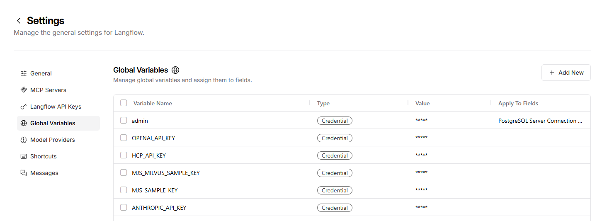
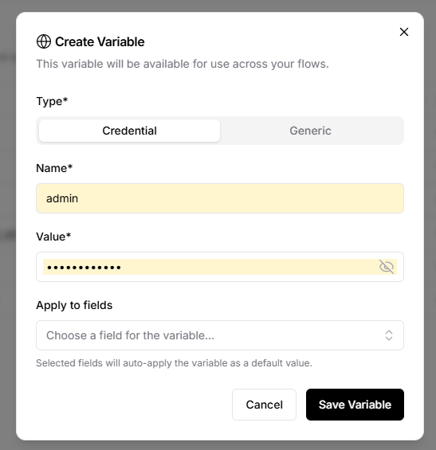
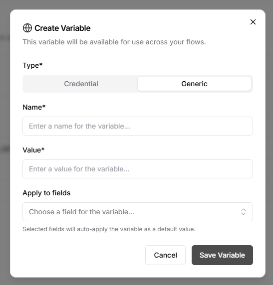
관리자 참고: Credential 타입
아래는 Langflow 관리자(플랫폼 엔지니어) 관점의 내용입니다. Global Variable의 Type을 Credential로 설정하면 값이 암호화되어 저장됩니다. 이때 서버의 LANGFLOW_SECRET_KEY 환경변수가 Fernet 포맷을 준수해야 합니다. Fernet 키가 설정되지 않거나 형식이 잘못되면 Credential 값의 암복호화에 실패합니다. 일반 사용자는 관리자에게 문의하세요.
Admin Note: Credential Type
This is for Langflow administrators (platform engineers). Setting Type to Credential encrypts the value. The server's LANGFLOW_SECRET_KEY env var must follow the Fernet format. If missing or malformed, encryption/decryption will fail. Regular users should contact the admin.
管理员注意：Credential 类型
以下为 Langflow 管理员（基础设施团队）参考内容。Type 设为 Credential 会加密存储值。服务器的 LANGFLOW_SECRET_KEY 环境变量必须遵循 Fernet 格式。缺失或格式错误将导致加解密失败。普通用户请联系管理员。
管理者向け：Credential タイプ
以下は Langflow 管理者（インフラ担当）向けの内容です。Type を Credential に設定すると値が暗号化されます。サーバーの LANGFLOW_SECRET_KEY 環境変数が Fernet フォーマットに準拠している必要があります。キーが未設定または形式が不正な場合、暗復号化に失敗します。一般ユーザーは管理者にお問い合わせください。
퀴즈
Quiz
测验
クイズ
Playground가 활성화되려면 어떤 컴포넌트가 반드시 필요한가요?
Which component is required for the Playground to be activated?
要激活 Playground，必须有哪个组件？
Playground を有効にするには、どのコンポーネントが必ず必要ですか？
정답 보기
Show Answer
查看答案
答えを見る
Chat Output 컴포넌트가 있어야 Playground가 활성화됩니다. Chat Input이 없으면 Playground는 있지만 채팅 대신 Run Flow 버튼만 표시됩니다.
A Chat Output component is required for the Playground to be activated. Without a Chat Input, the Playground is still present but only shows a Run Flow button instead of a chat interface.
必须有 Chat Output 组件才能激活 Playground。如果没有 Chat Input，Playground 仍然存在，但只显示 Run Flow 按钮而不是聊天界面。
Chat Output コンポーネントがあることで Playground が有効になります。Chat Input がない場合、Playground は表示されますがチャットの代わりに Run Flow ボタンのみが表示されます。
실습 과제 (5~10분)
Practice Exercise (5-10 min)
练习任务（5-10分钟）
実習課題（5〜10分）
- Chat Input → Prompt Template → OpenAI Compatible → Chat Output 기본 Flow를 만들어 보세요.
- Build a basic Flow: Chat Input → Prompt Template → OpenAI Compatible → Chat Output.
- 创建基本 Flow：Chat Input → Prompt Template → OpenAI Compatible → Chat Output。
- 基本的な Flow を作成してください：Chat Input → Prompt Template → OpenAI Compatible → Chat Output。
- Prompt Template에 시스템 프롬프트를 작성하고, Playground에서 테스트하세요.
- Write a system prompt in the Prompt Template and test it in the Playground.
- 在 Prompt Template 中编写系统提示，并在 Playground 中进行测试。
- Prompt Template にシステムプロンプトを記述し、Playground でテストしてください。
- Global Variable로 vLLM Base URL을 등록하고 OpenAI Compatible 컴포넌트에서 참조해 보세요.
- Register the vLLM Base URL as a Global Variable and reference it from the OpenAI Compatible component.
- 将 vLLM Base URL 注册为 Global Variable，并在 OpenAI Compatible 组件中引用它。
- vLLM Base URL を Global Variable として登録し、OpenAI Compatible コンポーネントから参照してみましょう。
7. Agent 만들기 (Tool Mode)
Agent는 LLM이 도구를 자율적으로 선택하고 호출하여 작업을 수행합니다.
7. Building Agents (Tool Mode)
The Agent autonomously selects and invokes tools to accomplish tasks.
7. 创建 Agent（工具模式）
Agent 自主选择和调用工具执行任务。
7. Agent の作成（Tool Mode）
Agent は LLM がツールを自律的に選択・呼び出してタスクを実行します。
↑ Toolset → Agent Tools
Agent 추가
Agents > Agent를 캔버스에 드래그. 모델과 시스템 프롬프트 설정.
Tool 추가
Calculator, Python REPL, 또는 Custom Component 추가.
Tool Mode ON
컴포넌트 헤더 (⋮) → Tool Mode ON → Toolset 포트 생성
연결 및 테스트
Toolset → Agent Tools, Chat Input/Output 연결 후 Playground에서 테스트
설정 팁
- 시스템 프롬프트: Agent 역할과 사용 가능한 도구를 명확히 설명
- 모델: Function Calling 지원 모델 사용
- Tool description: 구체적으로 작성할수록 Agent가 정확히 선택합니다
Add Agent
Drag Agents > Agent. Configure model and system prompt.
Add Tools
Add Calculator, Python REPL, or Custom Components.
Tool Mode ON
Header (⋮) → Tool Mode ON → Toolset port appears
Connect & Test
Toolset → Agent Tools, connect Chat I/O, test in Playground
Tips
- System Prompt: Clearly describe Agent role and available tools
- Model: Use one that supports Function Calling
- Tool description: More specific = better tool selection
添加 Agent
拖拽 Agents > Agent。配置模型和系统提示词。
添加工具
添加 Calculator、Python REPL 或自定义组件。
Tool Mode ON
标题栏 (⋮) → 开启 Tool Mode → 出现 Toolset 端口
连接并测试
Toolset → Agent Tools，连接 Chat I/O，在 Playground 测试
配置技巧
- 系统提示词：清晰描述 Agent 角色和可用工具
- 模型：使用支持 Function Calling 的模型
- Tool description：描述越具体，Agent 选择越准确
Agent を追加
Agents > Agent をキャンバスにドラッグ。モデルとシステムプロンプトを設定。
Tool を追加
Calculator、Python REPL、またはカスタムコンポーネントを追加。
Tool Mode ON
コンポーネントヘッダー (⋮) → Tool Mode ON → Toolset ポートが生成
接続してテスト
Toolset → Agent Tools に接続し、Chat Input/Output を繋いで Playground でテスト
設定のヒント
- システムプロンプト：Agent の役割と使用可能なツールを明確に説明
- モデル：Function Calling をサポートするモデルを使用
- Tool description：具体的に書くほど Agent が正確に選択します
실습 과제 (5~10분)
Practice Exercise (5-10 min)
练习任务（5-10分钟）
実習課題（5〜10分）
- Agent 컴포넌트를 추가하고, Calculator Tool과 Python REPL Tool을 연결하세요.
- Add an Agent component and connect both a Calculator Tool and a Python REPL Tool to it.
- 添加 Agent 组件，并将 Calculator Tool 和 Python REPL Tool 连接到它。
- Agent コンポーネントを追加し、Calculator Tool と Python REPL Tool を接続してください。
- Agent에게 '123 * 456의 결과를 알려줘'라고 요청하여 Calculator Tool이 호출되는지 확인하세요.
- Ask the Agent 'What is 123 * 456?' and verify that the Calculator Tool is invoked.
- 向 Agent 请求"告诉我 123 * 456 的结果"，确认 Calculator Tool 被调用。
- Agentに「123 * 456の結果を教えて」とリクエストし、Calculator Toolが呼び出されることを確認してください。
- Custom Component를 하나 더 만들어 Tool Mode로 Agent에 추가해 보세요.
- Create one more Custom Component, enable Tool Mode, and add it to the Agent.
- 再创建一个 Custom Component，启用 Tool Mode 并添加到 Agent。
- Custom Component をもう1つ作成し、Tool Mode を有効にして Agent に追加してみましょう。
8. API Access (OpenAI 호환)
Flow를 OpenAI 호환 API로 외부에 노출합니다. Share > API Access에서 확인하세요.
8. API Access (OpenAI Compatible)
Expose your Flow as an OpenAI-compatible API. Check Share > API Access.
8. API 访问（OpenAI 兼容）
将 Flow 作为 OpenAI 兼容 API 对外暴露。在 Share > API Access 中查看。
8. API アクセス（OpenAI 互換）
Flow を OpenAI 互換 API として外部に公開します。Share > API Access で確認してください。
| Endpoint | POST {LANGFLOW_URL}/api/v1/responses |
| Auth | x-api-key header |
| Model | Flow ID |
1) requests 호출
1) requests call
1) requests 调用
1) requests での呼び出し
import requests
response = requests.post(
"http://your-langflow-server:7860/api/v1/responses",
headers={"x-api-key": "YOUR_API_KEY", "Content-Type": "application/json"},
json={"model": "YOUR_FLOW_ID", "input": "안녕하세요!"},
)
print(response.json())2) OpenAI SDK 호환
2) OpenAI SDK compatible
2) OpenAI SDK 兼容
2) OpenAI SDK 互換
from openai import OpenAI
client = OpenAI(
base_url="http://your-langflow-server:7860/api/v1",
api_key="YOUR_API_KEY",
default_headers={"x-api-key": "YOUR_API_KEY"},
)
response = client.responses.create(model="YOUR_FLOW_ID", input="설명해주세요.")
print(response.output_text)3) 스트리밍
3) Streaming
3) 流式
3) ストリーミング
stream = client.responses.create(model="YOUR_FLOW_ID", input="장점을 알려주세요.", stream=True)
for event in stream:
print(event)4) 멀티턴 대화
4) Multi-turn
4) 多轮对话
4) マルチターン会話
r1 = client.responses.create(model="YOUR_FLOW_ID", input="안녕하세요!")
r2 = client.responses.create(model="YOUR_FLOW_ID", input="방금 뭐라고 했죠?", previous_response_id=r1.id)TIP
이 API로 Langflow Flow를 웹 앱, 모바일 앱 등에서 LLM API처럼 호출할 수 있습니다. 기존 OpenAI SDK 코드에서 base_url만 변경하면 됩니다.
TIP
Call your Langflow Flow like a standard LLM API from any app. Just change base_url in existing OpenAI SDK code.
提示
可从任何应用像调用标准 LLM API 一样调用 Langflow Flow。只需更改 OpenAI SDK 中的 base_url。
TIP
この API で Langflow Flow をウェブアプリやモバイルアプリなどから LLM API のように呼び出せます。既存の OpenAI SDK コードの base_url を変更するだけです。
Settings: Langflow API Keys
외부 시스템에서 Langflow Flow를 호출하려면 API Key가 필요합니다. Settings > Langflow API Keys에서 관리합니다.
API Key 생성
Settings > Langflow API Keys > + Add New를 클릭하여 새 키를 생성합니다. 키 이름을 지정하여 용도를 구분할 수 있습니다.
API 호출 시 사용
생성된 키를 x-api-key 헤더에 포함하여 /api/v1/responses 엔드포인트를 호출합니다.
API Key 보안
생성된 API Key는 한 번만 표시됩니다. 반드시 안전한 곳에 보관하세요. 유출이 의심되면 즉시 삭제하고 새로 생성합니다.
Settings: Langflow API Keys
To call Langflow Flows from external systems, you need an API Key. Manage them at Settings > Langflow API Keys.
Create API Key
Click Settings > Langflow API Keys > + Add New to generate a new key. Name it to distinguish its purpose.
Use in API Calls
Include the generated key in the x-api-key header when calling the /api/v1/responses endpoint.
API Key Security
Generated API Keys are shown only once. Store them securely. If compromised, delete immediately and regenerate.
Settings：Langflow API Keys
从外部系统调用 Langflow Flow 需要 API Key。在 Settings > Langflow API Keys 中管理。
创建 API Key
点击 Settings > Langflow API Keys > + Add New 生成新密钥。命名以区分用途。
在 API 调用中使用
将生成的密钥包含在 x-api-key 头中，调用 /api/v1/responses 端点。
API Key 安全
生成的 API Key 仅显示一次，请妥善保管。如有泄露嫌疑，立即删除并重新生成。
Settings：Langflow API Keys
外部システムから Langflow Flow を呼び出すには API Key が必要です。Settings > Langflow API Keys で管理します。
API Key の生成
Settings > Langflow API Keys > + Add New をクリックして新しいキーを生成します。名前を付けて用途を区別できます。
API 呼び出しで使用
生成されたキーを x-api-key ヘッダーに含めて /api/v1/responses エンドポイントを呼び出します。
API Key セキュリティ
生成された API Key は一度だけ表示されます。安全な場所に保管してください。漏洩の疑いがある場合は即座に削除して再生成します。
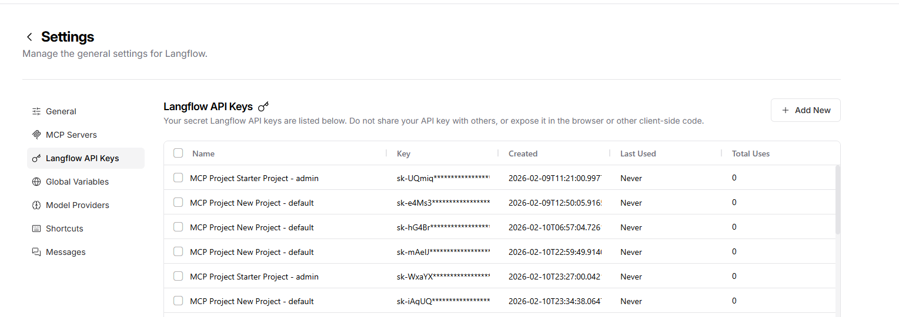
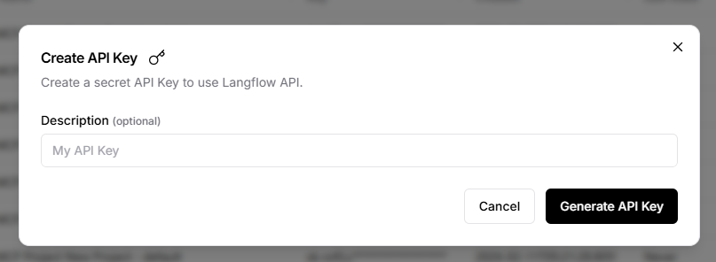
퀴즈
Quiz
测验
クイズ
Langflow의 OpenAI 호환 API에서 인증은 어떤 방식을 사용하나요?
What authentication method does Langflow's OpenAI-compatible API use?
Langflow 的 OpenAI 兼容 API 使用哪种认证方式？
Langflow の OpenAI 互換 API ではどの認証方式を使用しますか？
정답 보기
Show Answer
查看答案
答えを見る
x-api-key 헤더를 사용합니다. Bearer 토큰이 아닌 점에 주의하세요. API Key는 Settings > Langflow API Keys에서 생성합니다.
It uses the x-api-key header. Note that it is not a Bearer token. API Keys are generated under Settings > Langflow API Keys.
使用 x-api-key 请求头。请注意，不是 Bearer token。API Key 在 Settings > Langflow API Keys 中生成。
x-api-key ヘッダーを使用します。Bearer トークンではない点に注意してください。API Key は Settings > Langflow API Keys で生成します。
9. RAG Pipeline 구축하기
RAG(Retrieval-Augmented Generation)는 LLM이 외부 문서를 검색(Retrieval)한 후 그 내용을 바탕으로 답변을 생성(Generation)하는 패턴입니다. 폐쇄망(Air-gapped) 내 사내 문서를 LLM이 참고하도록 만들 수 있어 실무에서 가장 많이 사용됩니다.
RAG가 필요한 이유
- LLM은 학습 데이터에 없는 사내 문서, 매뉴얼, 규정을 모름
- RAG로 관련 문서를 검색하여 LLM에 컨텍스트로 제공
- 할루시네이션(거짓 정보 생성)을 크게 줄일 수 있음
RAG Flow 구조
9. Building a RAG Pipeline
RAG (Retrieval-Augmented Generation) is a pattern where the LLM retrieves external documents first, then generates answers based on that content. Essential for making LLMs reference internal documents in air-gapped environments.
Why RAG?
- LLMs don't know your internal docs, manuals, or policies
- RAG retrieves relevant docs and provides them as context to the LLM
- Significantly reduces hallucinations
RAG Flow Structure
9. 构建 RAG 管道
RAG（检索增强生成）是 LLM 先检索外部文档，再基于内容生成回答的模式。在封闭网络中让 LLM 参考内部文档的必备方案。
为什么需要 RAG？
- LLM 不了解内部文档、手册、规章
- RAG 检索相关文档并作为上下文提供给 LLM
- 显著减少幻觉（生成虚假信息）
RAG Flow 结构
9. RAG パイプラインの構築
RAG（Retrieval-Augmented Generation）は LLM が外部ドキュメントを検索（Retrieval）した後、その内容を基に回答を生成（Generation）するパターンです。閉域網内の社内ドキュメントを LLM が参照できるようにする方法として最も実務で活用されています。
RAG が必要な理由
- LLM は学習データにない社内文書・マニュアル・規程を知らない
- RAG で関連文書を検索し、LLM にコンテキストとして提供
- ハルシネーション（誤情報の生成）を大幅に削減できる
RAG Flow の構造
Indexing (문서 저장)Indexing (Store Documents)索引（文档存储）インデクシング（文書保存）
Querying (검색 + 응답)Querying (Retrieve + Respond)查询（检索 + 回答）クエリ（検索 + 応答）
단계별 구축
Phase 1: 문서 인덱싱
문서 로드
File Loader 컴포넌트로 PDF, TXT, DOCX 등의 문서를 로드합니다.
텍스트 분할
Text Splitter로 문서를 적절한 크기의 청크(chunk)로 나눕니다. 일반적으로 500~1000자, 100~200자 overlap을 권장합니다.
임베딩 생성
Embeddings 컴포넌트(HuggingFace 또는 OpenAI Compatible)로 각 청크를 벡터로 변환합니다.
벡터 저장
Vector Store(Milvus, OpenSearch, PostgreSQL 등)에 벡터를 저장합니다.
Phase 2: 검색 및 응답
사용자 질문 → 유사 문서 검색
사용자 질문을 동일한 Embedding 모델로 벡터화한 후, Vector Store에서 유사도 검색으로 관련 청크를 가져옵니다.
프롬프트에 컨텍스트 삽입
검색된 문서 청크를 Prompt Template의 {context} 변수에 삽입합니다.
LLM이 컨텍스트 기반 응답 생성
LLM은 제공된 컨텍스트를 바탕으로 정확한 답변을 생성합니다.
RAG 프롬프트 예시
Step-by-Step Build
Phase 1: Document Indexing
Load Documents
Use File Loader to load PDF, TXT, DOCX files.
Split Text
Text Splitter divides documents into chunks. Recommended: 500-1000 chars, 100-200 char overlap.
Generate Embeddings
Embeddings component (HuggingFace or OpenAI Compatible) converts each chunk to a vector.
Store Vectors
Save vectors to a Vector Store (Milvus, OpenSearch, PostgreSQL, etc.).
Phase 2: Retrieval & Response
Query → Similar Document Search
Vectorize the user's question with the same Embedding model, then similarity search the Vector Store.
Inject Context into Prompt
Insert retrieved chunks into the Prompt Template's {context} variable.
LLM Generates Context-Based Response
The LLM generates an accurate answer based on the provided context.
RAG Prompt Example
分步构建
Phase 1：文档索引
加载文档
使用 File Loader 加载 PDF、TXT、DOCX 等文件。
文本分割
Text Splitter 将文档分成适当大小的块。建议：500-1000字符，100-200字符重叠。
生成嵌入
Embeddings 组件将每个块转换为向量。
存储向量
将向量保存到 Vector Store（Milvus、OpenSearch、PostgreSQL 等）。
Phase 2：检索与回答
查询 → 相似文档检索
用相同的 Embedding 模型向量化用户问题，在 Vector Store 中进行相似度搜索。
注入上下文到提示词
将检索到的文档块插入 Prompt Template 的 {context} 变量中。
LLM 基于上下文生成回答
LLM 基于提供的上下文生成准确的回答。
RAG 提示词示例
ステップごとの構築
Phase 1：文書インデクシング
文書の読み込み
File Loader コンポーネントで PDF、TXT、DOCX などの文書を読み込みます。
テキストの分割
Text Splitter で文書を適切なサイズのチャンクに分割します。一般的に 500〜1000 文字、100〜200 文字のオーバーラップを推奨します。
埋め込みの生成
Embeddings コンポーネント（HuggingFace または OpenAI Compatible）で各チャンクをベクトルに変換します。
ベクトルの保存
Vector Store（Milvus、OpenSearch、PostgreSQL など）にベクトルを保存します。
Phase 2：検索と応答
ユーザーの質問 → 類似文書の検索
ユーザーの質問を同じ Embedding モデルでベクトル化し、Vector Store で類似度検索を行い関連チャンクを取得します。
プロンプトへのコンテキスト挿入
検索された文書チャンクを Prompt Template の {context} 変数に挿入します。
LLM がコンテキストに基づいて応答を生成
LLM は提供されたコンテキストを基に正確な回答を生成します。
RAG プロンプト例
아래 참고 문서를 바탕으로 사용자의 질문에 답변해주세요.
참고 문서에 없는 내용은 "해당 정보를 찾을 수 없습니다"라고 답변하세요.
[참고 문서]
{context}
[사용자 질문]
{question}TIP: 청크 크기 조절
청크가 너무 작으면 맥락이 부족하고, 너무 크면 검색 정확도가 떨어집니다. 문서 특성에 맞게 chunk_size와 chunk_overlap을 실험해보세요.
TIP: Chunk size tuning
Too small = missing context. Too large = lower retrieval accuracy. Experiment with chunk_size and chunk_overlap for your document type.
提示：调整块大小
太小缺乏上下文，太大降低检索精度。根据文档特点实验 chunk_size 和 chunk_overlap。
TIP：チャンクサイズの調整
チャンクが小さすぎると文脈が不足し、大きすぎると検索精度が低下します。文書の特性に合わせて chunk_size と chunk_overlap を試してみてください。
실습 과제 (5~10분)
Practice Exercise (5-10 min)
练习任务（5-10分钟）
実習課題（5〜10分）
- Knowledge 탭에서 새 컬렉션을 만들고 문서를 1~2개 업로드하세요.
- In the Knowledge tab, create a new collection and upload 1–2 documents.
- 在 Knowledge 标签页中新建一个集合，并上传 1~2 个文档。
- Knowledge タブで新しいコレクションを作成し、ドキュメントを1〜2件アップロードしてください。
- Flow에서 Chat Input → Knowledge → Prompt Template → LLM → Chat Output을 연결하세요.
- In the Flow, connect Chat Input → Knowledge → Prompt Template → LLM → Chat Output.
- 在 Flow 中连接 Chat Input → Knowledge → Prompt Template → LLM → Chat Output。
- Flow で Chat Input → Knowledge → Prompt Template → LLM → Chat Output を接続してください。
- 업로드한 문서 내용에 대해 질문하여 RAG가 동작하는지 확인하세요.
- Ask a question about the content of the uploaded documents and verify that RAG is working correctly.
- 针对上传文档的内容进行提问，确认 RAG 正常运作。
- アップロードしたドキュメントの内容について質問し、RAG が正しく動作することを確認してください。
10. 실전 Tips & 트러블슈팅
Trace (Flow Activity) — 네이티브 Observability
Phoenix 같은 외부 Tracing 도구 없이도, Langflow 1.8+부터 Flow Activity에서 실행 과정을 네이티브로 추적할 수 있습니다.
- Flow Activity 패널: Flow 실행 후 각 컴포넌트의 입력/출력, 실행 시간, 상태를 단계별로 확인
- 에러 추적: 어떤 컴포넌트에서 실패했는지, 어떤 에러가 발생했는지 즉시 파악
- 토큰 사용량: LLM 호출 시 사용된 토큰 수와 비용 확인
- 실행 이력: 과거 실행 결과를 저장하여 비교/분석 가능
TIP
Flow가 예상대로 동작하지 않을 때, Flow Activity를 먼저 확인하세요. 각 컴포넌트의 입출력을 추적하면 문제 원인을 빠르게 찾을 수 있습니다. 별도의 외부 도구 설치 없이 Langflow 내에서 바로 가능합니다.
Trace (Flow Activity) — Native Observability
Since Langflow 1.8+, Flow Activity provides native execution tracing without external tools like Phoenix.
- Flow Activity panel: View each component's input/output, execution time, and status step by step
- Error tracking: Instantly identify which component failed and what error occurred
- Token usage: Check token counts and costs for LLM calls
- Execution history: Past runs are saved for comparison and analysis
TIP
When a Flow doesn't behave as expected, check Flow Activity first. Tracing each component's I/O helps pinpoint issues fast — no external tool installation needed.
Trace（Flow Activity）— 原生可观测性
从 Langflow 1.8+ 起，Flow Activity 无需 Phoenix 等外部工具即可原生追踪执行过程。
- Flow Activity 面板：逐步查看每个组件的输入/输出、执行时间和状态
- 错误追踪：即时识别哪个组件失败及错误原因
- Token 用量：查看 LLM 调用的 Token 数量和成本
- 执行历史：保存过去的运行结果用于比较和分析
提示
Flow 未按预期工作时，先检查 Flow Activity。追踪每个组件的输入/输出可快速定位问题——无需安装外部工具。
Trace（Flow Activity）— ネイティブ Observability
Langflow 1.8+ から、Phoenix などの外部ツールなしで Flow Activity でネイティブに実行過程を追跡できます。
- Flow Activity パネル：各コンポーネントの入出力、実行時間、ステータスをステップごとに確認
- エラー追跡：どのコンポーネントで失敗したか、どんなエラーが発生したか即座に把握
- トークン使用量：LLM 呼び出しで使用されたトークン数とコストを確認
- 実行履歴：過去の実行結果を保存して比較・分析可能
TIP
Flow が期待通りに動作しない時は、まず Flow Activity を確認しましょう。各コンポーネントの入出力を追跡すれば問題原因を素早く特定できます。外部ツールのインストールは不要です。
Flow 설계 Best Practices
- 작게 시작: 복잡한 Flow를 한 번에 만들지 말고, 2~3개 컴포넌트로 기본 동작을 확인한 후 점진적으로 확장하세요.
- Playground에서 즉시 테스트: 컴포넌트를 추가할 때마다 Playground에서 동작을 확인하세요.
- 각 컴포넌트 개별 실행: 컴포넌트의 재생(▷) 버튼으로 개별 테스트가 가능합니다. 문제 발생 시 어디서 실패했는지 빠르게 찾을 수 있습니다.
- Freeze 활용: 정상 동작이 확인된 컴포넌트는 Freeze하여 재실행 시 불필요한 API 호출을 줄이세요.
자주 발생하는 문제
10. Pro Tips & Troubleshooting
Flow Design Best Practices
- Start small: Don't build complex Flows at once. Verify basic operation with 2-3 components, then expand.
- Test immediately in Playground: Check behavior after each component addition.
- Run components individually: Use the play (▷) button to test each component. Quickly identify where failures occur.
- Use Freeze: Freeze verified components to avoid unnecessary API calls on re-runs.
Common Issues
10. 实战技巧与故障排除
Flow 设计最佳实践
- 从小开始：不要一次构建复杂 Flow。先用2-3个组件验证基本功能，再逐步扩展。
- 在 Playground 中立即测试：每添加一个组件就检查行为。
- 单独运行组件：使用播放（▷）按钮测试各组件。快速定位故障点。
- 使用 Freeze：冻结已验证的组件，避免重新运行时的不必要 API 调用。
常见问题
10. 実践 Tips & トラブルシューティング
Flow 設計のベストプラクティス
- 小さく始める：複雑な Flow を一度に作らず、2〜3個のコンポーネントで基本動作を確認してから段階的に拡張してください。
- Playground ですぐテスト：コンポーネントを追加するたびに Playground で動作を確認してください。
- 各コンポーネントを個別実行：コンポーネントの再生（▷）ボタンで個別テストが可能です。問題発生時にどこで失敗したか素早く特定できます。
- Freeze を活用：正常動作が確認できたコンポーネントは Freeze して、再実行時の不要な API 呼び出しを削減しましょう。
よくある問題
| 증상 | Symptom | 症状 | 症状 | 원인 | Cause | 原因 | 原因 | 해결 | Solution | 解决 | 解決策 |
|---|---|---|---|---|---|---|---|---|---|---|---|
| Playground가 안 보임 | Playground not visible | Playground 不可见 | Playground が表示されない | Chat Output 없음 | No Chat Output | 没有 Chat Output | Chat Output がない | Chat Output 컴포넌트 추가 | Add Chat Output component | 添加 Chat Output 组件 | Chat Output コンポーネントを追加 |
| 채팅 입력이 없고 Run Flow만 보임 | No chat input, only Run Flow | 没有聊天输入，只有 Run Flow | チャット入力がなく Run Flow のみ表示 | Chat Input 없음 | No Chat Input | 没有 Chat Input | Chat Input がない | Chat Input 컴포넌트 추가 | Add Chat Input component | 添加 Chat Input 组件 | Chat Input コンポーネントを追加 |
| 모델 응답 없음 / 타임아웃 | No model response / timeout | 无模型响应 / 超时 | モデルの応答なし / タイムアウト | Base URL 또는 모델명 오류 | Wrong Base URL or model name | Base URL 或模型名称错误 | Base URL またはモデル名のエラー | vLLM 서버 URL과 모델명 재확인 | Verify vLLM server URL and model | 重新确认 vLLM 服务器 URL 和模型 | vLLM サーバーの URL とモデル名を再確認 |
| Agent가 Tool을 호출하지 않음 | Agent doesn't call Tools | Agent 不调用工具 | Agent が Tool を呼び出さない | Tool description 부족 | Poor tool description | 工具描述不足 | Tool の description が不十分 | description을 구체적으로 수정 | Make description more specific | 使描述更具体 | description をより具体的に修正 |
| 포트 연결이 안됨 | Ports won't connect | 端口无法连接 | ポートが接続できない | 타입 불일치 (Message ↔ Data) | Type mismatch (Message ↔ Data) | 类型不匹配（Message ↔ Data） | タイプの不一致（Message ↔ Data） | 출력/입력 타입 확인, 필요시 Parse Data 사용 | Check types, use Parse Data if needed | 检查类型，必要时使用 Parse Data | 出力・入力タイプを確認し、必要に応じて Parse Data を使用 |
| pip install 후 import 에러 | Import error after pip install | pip install 后 import 错误 | pip install 後に import エラー | Langflow 프로세스 재시작 필요 | Langflow process restart needed | 需要重启 Langflow 进程 | Langflow プロセスの再起動が必要 | Langflow 서버 재시작 | Restart Langflow server | 重启 Langflow 服务器 | Langflow サーバーを再起動 |
프롬프트 엔지니어링 팁
- 역할 부여: "당신은 ~한 전문가입니다"로 시작하면 답변 품질이 향상됩니다.
- 출력 형식 지정: "JSON으로 답변하세요", "3가지로 요약하세요" 등 형식을 명시하세요.
- Few-shot 예시: 원하는 입출력 예시를 프롬프트에 포함하면 정확도가 높아집니다.
- 제약 조건: "~하지 마세요", "반드시 ~하세요" 등 경계를 명확히 설정하세요.
- Chain of Thought: "단계별로 생각해주세요"를 추가하면 복잡한 추론에 효과적입니다.
Langflow IDE vs Runtime
Langflow는 개발 환경(IDE)과 운영 환경(Runtime)이 분리되어 있습니다.
- Dev Environment (IDE): 개발자/비즈니스 사용자가 Flow를 설계, 프로토타이핑, 테스트하는 환경
- Production Environment (Runtime): 검증된 Flow가 배포되어 GenAI 애플리케이션이 REST API로 호출하는 환경
Dev에서 충분히 테스트한 Flow를 Production으로 프로모션(승격)하여 운영합니다.
Prompt Engineering Tips
- Assign a role: Start with "You are an expert in ~" to improve answer quality.
- Specify output format: "Reply in JSON", "Summarize in 3 points", etc.
- Few-shot examples: Including input/output examples in prompts improves accuracy.
- Set constraints: "Do not ~", "Always ~" — set clear boundaries.
- Chain of Thought: Adding "Think step by step" helps with complex reasoning.
Langflow IDE vs Runtime
Langflow separates Development (IDE) and Production (Runtime) environments.
- Dev Environment (IDE): Where developers/business users design, prototype, and test Flows
- Production Environment (Runtime): Where validated Flows are deployed; GenAI apps call them via REST API
Flows are promoted from Dev to Production after thorough testing.
提示词工程技巧
- 分配角色：以"你是~领域的专家"开头可提高回答质量。
- 指定输出格式："用JSON回答"、"总结为3点"等。
- Few-shot 示例：在提示词中包含输入/输出示例可提高准确性。
- 设置约束："不要~"、"必须~"——设定明确边界。
- 思维链：添加"请逐步思考"有助于复杂推理。
Langflow IDE 与 Runtime
Langflow 将开发环境（IDE）和生产环境（Runtime）分离。
- Dev Environment（IDE）：开发者/业务用户设计、原型验证和测试 Flow 的环境
- Production Environment（Runtime）：经验证的 Flow 部署后，GenAI 应用通过 REST API 调用
Flow 在 Dev 中充分测试后升级（Promote）到 Production。
プロンプトエンジニアリングのヒント
- 役割の付与：「あなたは〜の専門家です」で始めると回答品質が向上します。
- 出力形式の指定：「JSON で回答してください」「3点に要約してください」など形式を明示します。
- Few-shot 例示：期待する入出力の例をプロンプトに含めると精度が高まります。
- 制約条件：「〜しないでください」「必ず〜してください」など境界を明確に設定します。
- Chain of Thought：「ステップごとに考えてください」を追加すると複雑な推論に効果的です。
Langflow IDE と Runtime
Langflow は開発環境（IDE）と運用環境（Runtime）が分離されています。
- Dev Environment（IDE）：開発者・ビジネスユーザーが Flow を設計・プロトタイピング・テストする環境
- Production Environment（Runtime）：検証済みの Flow がデプロイされ、GenAI アプリが REST API で呼び出す環境
Dev で十分にテストした Flow を Production へプロモーション（昇格）して運用します。
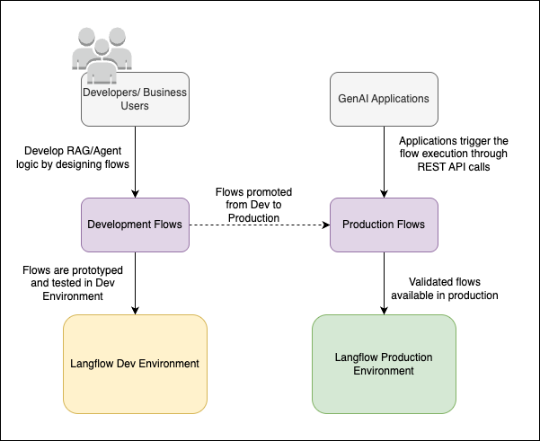
컨테이너 기반 아키텍처
현재 Langflow는 Kubernetes 클러스터 위에 컨테이너 형태로 배포되어 있습니다. Ingress Controller와 Load Balancer를 통해 여러 Langflow Replica Pod가 요청을 분산 처리하며, Storage Pod에서 Flow 데이터를 관리합니다.
Container-based Architecture
Langflow is deployed as containers on a Kubernetes cluster. An Ingress Controller and Load Balancer distribute requests across multiple Langflow Replica Pods, with a Storage Pod managing Flow data.
基于容器的架构
Langflow 以容器形式部署在 Kubernetes 集群上。通过 Ingress Controller 和 Load Balancer 将请求分配到多个 Langflow Replica Pod，Storage Pod 管理 Flow 数据。
コンテナベースのアーキテクチャ
現在 Langflow は Kubernetes クラスター上にコンテナ形式でデプロイされています。Ingress Controller と Load Balancer を通じて複数の Langflow Replica Pod がリクエストを分散処理し、Storage Pod で Flow データを管理します。
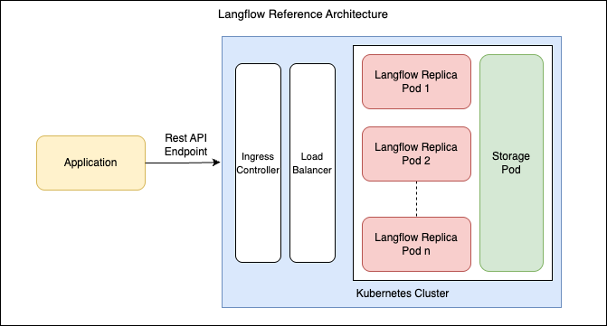
11. Langflow 1.9 주요 신기능
2026년 초 출시된 Langflow 1.9는 AI 에이전트 개발 경험을 크게 향상시키는 기능들이 추가되었습니다.
Langflow Assistant (AI 코파일럿)
Langflow UI 안에 내장된 AI 어시스턴트입니다. 자연어로 "이런 컴포넌트가 필요해"라고 설명하면, Assistant가 Custom Component 코드를 자동 생성합니다.
사용 방법
- LLM Provider 설정: Settings에서 Anthropic, OpenAI 등 LLM Provider를 먼저 구성합니다.
- Assistant 열기: Langflow UI에서 Assistant를 실행합니다.
- 자연어로 설명: 원하는 컴포넌트 기능을 자연어로 입력합니다 (프롬프트 최대 500자).
- 자동 생성: Assistant가 Custom Component를 즉시 생성합니다.
주요 특징
- 자연어 → 컴포넌트 자동 생성: Python 코드를 직접 작성하지 않아도 됩니다
- Flow 실행 및 검증: 생성한 Flow를 Assistant가 직접 실행하고 결과를 검증
- 비개발자도 활용: 코딩 경험 없이도 커스텀 로직을 구현할 수 있습니다
- 스트리밍 대화:
/assist/streamAPI로 실시간 진행 상황 확인
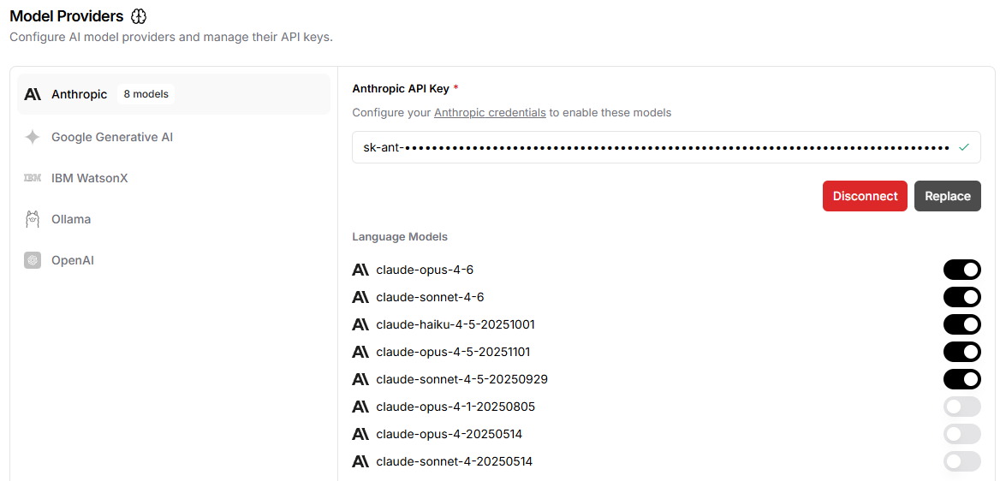
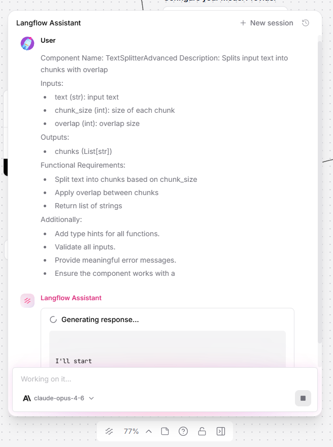
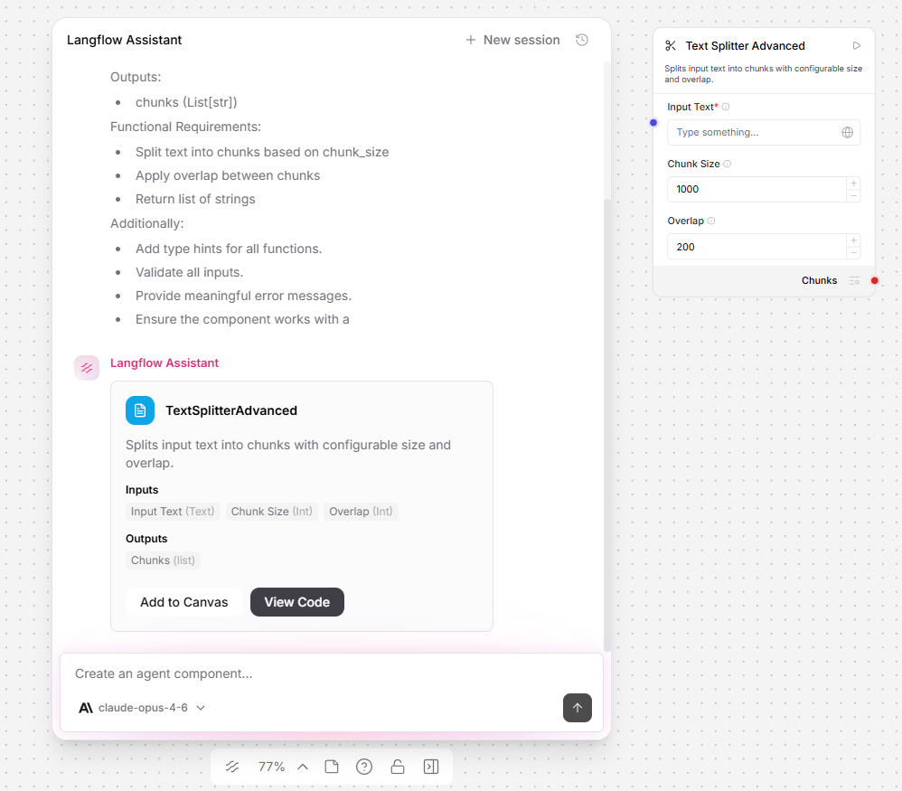
MCP 기반 상호운용성
Langflow의 모든 Flow가 자동으로 MCP Tool로 노출됩니다. 외부 AI 에이전트나 IDE가 Langflow Flow를 직접 발견하고 호출할 수 있습니다.
- Flow를 MCP 서버로 자동 게시
- 외부 에이전트가 Visual Builder 없이도 Flow를 실행
기타 주요 개선
- 배포 스테퍼 UI: Flow 배포를 단계별로 안내하는 새로운 배포 페이지
- 글로벌 모델 설정 (1.8): API 키를 한 번만 설정하면 모든 Flow에서 공유
- Traces (1.8): Flow 실행 과정을 단계별로 추적·디버깅
- OpenAI Responses API 호환 (1.6):
/responses엔드포인트 지원
11. Langflow 1.9 Key Features
Released early 2026, Langflow 1.9 brings major improvements to the AI agent development experience.
Langflow Assistant (AI Copilot)
A built-in AI assistant inside the Langflow UI. Describe what you need in natural language, and the Assistant auto-generates Custom Component code.
How to Use
- Configure LLM Provider: Set up Anthropic, OpenAI, etc. in Settings first.
- Open Assistant: Launch the Assistant from the Langflow UI.
- Describe in natural language: Type the desired component functionality (max 500 characters).
- Auto-generate: The Assistant instantly creates the Custom Component.
Key Features
- Natural language → Auto-generated components: No need to write Python manually
- Flow execution & validation: Assistant runs and validates Flows directly
- Non-developers welcome: Implement custom logic without coding experience
- Streaming chat: Real-time progress via
/assist/streamAPI
MCP-Based Interoperability
All Langflow Flows are automatically exposed as MCP Tools. External AI agents and IDEs can discover and invoke Flows directly.
- Flows auto-published as MCP servers
- External agents can execute Flows without the Visual Builder
Other Key Improvements
- Deployment Stepper UI: New guided deployment page
- Global Model Settings (1.8): Configure API keys once, share across all Flows
- Traces (1.8): Step-by-step Flow execution debugging
- OpenAI Responses API (1.6):
/responsesendpoint support
11. Langflow 1.9 主要新功能
2026年初发布的 Langflow 1.9 大幅提升了 AI Agent 开发体验。
Langflow Assistant（AI 助手）
内置于 Langflow UI 中的 AI 助手。用自然语言描述需求，Assistant 自动生成自定义组件代码。
- 自然语言 → 自动生成组件：无需手动编写 Python
- Flow 执行与验证：Assistant 直接运行和验证 Flow
- 流式对话：通过
/assist/streamAPI 实时查看进度
基于 MCP 的互操作性
所有 Langflow Flow 自动暴露为 MCP 工具。外部 AI Agent 和 IDE 可直接发现和调用 Flow。
其他关键改进
- 部署引导 UI：新的分步部署页面
- 全局模型设置 (1.8)：API 密钥一次配置，所有 Flow 共享
- Traces (1.8)：逐步追踪 Flow 执行过程
- OpenAI Responses API (1.6)：
/responses端点支持
11. Langflow 1.9 主要新機能
2026年初頭にリリースされたLangflow 1.9は、AIエージェント開発体験を大幅に向上させます。
Langflow Assistant（AIコパイロット）
Langflow UIに内蔵されたAIアシスタント。自然言語で説明するだけで、カスタムコンポーネントのコードを自動生成します。
- 自然言語 → コンポーネント自動生成：Python手書き不要
- Flow実行・検証：Assistantが直接Flowを実行し検証
- ストリーミング：
/assist/streamAPIでリアルタイム進捗確認
MCPベースの相互運用性
すべてのLangflow Flowが自動的にMCPツールとして公開されます。外部AIエージェントやIDEから直接発見・呼び出し可能です。
その他の主要改善
- デプロイステッパーUI：新しいガイド付きデプロイページ
- グローバルモデル設定 (1.8)：APIキーを一度設定、全Flowで共有
- Traces (1.8)：Flow実行のステップごとのデバッグ
- OpenAI Responses API (1.6)：
/responsesエンドポイントサポート
12. 하네스 엔지니어링 (Harness Engineering)
"모델이 아니라 환경이 병목이다" — 하네스 엔지니어링은 AI 에이전트가 안정적으로 작업할 수 있도록 제약, 피드백, 운영 시스템을 설계하는 방법론입니다. 2026년 2월 HashiCorp과 OpenAI에 의해 공식화되었습니다.
프롬프트 < 컨텍스트 < 하네스
12. Harness Engineering
"The bottleneck is the environment, not the model" — Harness Engineering is the methodology of designing constraints, feedback loops, and operational systems so AI agents can work reliably. Formalized in Feb 2026 by HashiCorp and OpenAI.
Prompt < Context < Harness
12. 哈尼斯工程（Harness Engineering）
"瓶颈在于环境，而非模型" — 哈尼斯工程是设计约束、反馈循环和运营系统以使AI Agent可靠工作的方法论。2026年2月由HashiCorp和OpenAI正式提出。
Prompt < Context < Harness
12. ハーネスエンジニアリング
「ボトルネックはモデルではなく環境にある」 — ハーネスエンジニアリングは、AIエージェントが安定的に動作できるよう制約、フィードバック、運用システムを設計する方法論です。2026年2月にHashiCorpとOpenAIにより公式化されました。
Prompt < Context < Harness
| 개념 | Concept | 概念 | 概念 | 핵심 질문 | Key Question | 核心问题 | 核心質問 | 설계 대상 | Design Target | 设计对象 | 設計対象 |
|---|---|---|---|---|---|---|---|---|---|---|---|
| Prompt Engineering | Prompt Engineering | Prompt Engineering | Prompt Engineering | 무엇을 물어볼까? | What to ask? | 问什么？ | 何を聞くか？ | LLM 지시문 | LLM instructions | LLM 指令 | LLM指示文 |
| Context Engineering | Context Engineering | Context Engineering | Context Engineering | 무엇을 보여줄까? | What to show? | 展示什么？ | 何を見せるか？ | 추론 시점의 모든 토큰 | All tokens at inference | 推理时的所有Token | 推論時の全トークン |
| Harness Engineering | Harness Engineering | Harness Engineering | Harness Engineering | 환경을 어떻게 설계할까? | How to design the env? | 如何设计环境？ | 環境をどう設計するか？ | 제약 + 피드백 + 운영 시스템 | Constraints + feedback + ops | 约束 + 反馈 + 运营系统 | 制約 + フィードバック + 運用 |
하네스의 6가지 구성 요소
1. 컨텍스트 파일
프로젝트 지시 문서 (CLAUDE.md, AGENTS.md 등). 코딩 규칙, 아키텍처, 빌드 명령을 명시합니다. 목차(Map) 형태로 모듈식 구성이 효과적입니다.
2. MCP 서버
외부 도구·데이터 연결. 이슈 트래커, 사내 문서 검색, DB 등을 연결하되, 필요한 것만 선별적으로 연결합니다.
3. 스킬 파일
반복 작업 절차를 SKILL.md에 문서화. 코드 리뷰 체크리스트, 배포 워크플로 등 에이전트가 참조/수행합니다.
4. 기계적 강제
커스텀 린터로 아키텍처 규칙을 자동 검증. 린터 실패 시 "어떻게 수정할지"를 컨텍스트에 주입합니다.
5. 가비지 컬렉션
백그라운드 에이전트가 코드·문서 편차를 지속 스캔. 낡은 패턴을 자동 리팩토링 PR로 생성합니다.
6. 관찰 가능성
로그, 메트릭, 실행 추적 접근 권한을 에이전트에 제공. 에이전트가 스스로 디버깅·검증 가능하게 합니다.
Langflow에서의 하네스 엔지니어링
Langflow의 Flow 자체가 하네스의 일부입니다. Flow를 설계할 때 하네스 관점을 적용하면 안정성과 재현성이 크게 향상됩니다:
- Prompt Template = 컨텍스트 파일 역할 (일관된 지시사항)
- Tool Mode = MCP 서버 역할 (외부 도구 연결)
- Freeze = 기계적 강제 (불필요한 재실행 방지)
- Traces (1.8+) = 관찰 가능성 (실행 과정 추적)
- Dev → Prod 프로모션 = 피드백 루프 (검증 후 배포)
핵심 인사이트
모델 성능은 빠르게 평준화됩니다. 하네스는 팀이 직접 쌓아야 하는 차별화 자산입니다. OpenAI Codex 실험에서 5개월 간 수동 코드 0줄로 백만 라인을 생성한 것은, 모델이 아닌 하네스 개선의 결과입니다.
6 Components of a Harness
1. Context Files
Project instruction docs (CLAUDE.md, AGENTS.md). Specify coding rules, architecture, build commands. Modular map-style structure is most effective.
2. MCP Servers
External tool/data connections. Issue trackers, internal docs, DBs — connect only what's needed selectively.
3. Skill Files
Documented procedures in SKILL.md. Code review checklists, deployment workflows for the agent to reference.
4. Mechanical Enforcement
Custom linters auto-verify architecture rules. On failure, inject "how to fix" into the context.
5. Garbage Collection
Background agents scan for code/doc drift. Auto-generate refactoring PRs for outdated patterns.
6. Observability
Give agents access to logs, metrics, execution traces. Enables self-debugging and verification.
Harness Engineering in Langflow
Langflow Flows are themselves part of the harness. Applying harness thinking to Flow design greatly improves stability and reproducibility:
- Prompt Template = Context files (consistent instructions)
- Tool Mode = MCP servers (external tool connection)
- Freeze = Mechanical enforcement (prevent unnecessary re-execution)
- Traces (1.8+) = Observability (execution tracking)
- Dev → Prod promotion = Feedback loop (validate before deploy)
Key Insight
Model performance is rapidly commoditizing. The harness is the differentiating asset teams must build themselves. In OpenAI's Codex experiment, generating 1M lines with 0 manual code over 5 months was the result of harness improvements, not model changes.
哈尼斯的 6 个组成部分
1. 上下文文件
项目指令文档。指定编码规则、架构、构建命令。模块化目录结构最有效。
2. MCP 服务器
外部工具/数据连接。仅选择性连接必要的系统。
3. 技能文件
在 SKILL.md 中文档化的重复任务流程。
4. 机械强制
自定义 Linter 自动验证架构规则。
5. 垃圾回收
后台 Agent 持续扫描代码/文档偏差，自动生成重构 PR。
6. 可观测性
为 Agent 提供日志、指标、执行追踪访问权限。
Langflow 中的哈尼斯工程
- Prompt Template = 上下文文件
- Tool Mode = MCP 服务器
- Freeze = 机械强制
- Traces = 可观测性
- Dev → Prod = 反馈循环
核心洞察
模型性能正在快速平等化。哈尼斯是团队必须自建的差异化资产。
ハーネスの6つの構成要素
1. コンテキストファイル
プロジェクト指示文書。コーディング規則、アーキテクチャ、ビルドコマンドを明記。モジュール式マップ構造が効果的です。
2. MCPサーバー
外部ツール・データ接続。必要なものだけ選択的に接続します。
3. スキルファイル
SKILL.mdに反復作業手順を文書化。コードレビューチェックリスト等。
4. 機械的強制
カスタムリンターでアーキテクチャルールを自動検証。
5. ガベージコレクション
バックグラウンドエージェントがコード・文書の乖離を継続スキャン。
6. 観測可能性
ログ、メトリクス、実行トレースへのアクセスをエージェントに提供。
Langflowでのハーネスエンジニアリング
- Prompt Template = コンテキストファイル
- Tool Mode = MCPサーバー
- Freeze = 機械的強制
- Traces = 観測可能性
- Dev → Prod = フィードバックループ
核心インサイト
モデル性能は急速にコモディティ化しています。ハーネスはチームが自ら構築すべき差別化資産です。
참고자료
공식 문서
- Langflow 공식 문서 — 컴포넌트, API, 설치 가이드
- Langflow GitHub 저장소 — 소스 코드, 이슈, 릴리스 노트
LLM 추론 엔진
- vLLM 공식 문서 — 설치, 모델 서빙, OpenAI-compatible API
- vLLM 논문 — Woosuk Kwon et al., "Efficient Memory Management for Large Language Model Serving with PagedAttention" (2023)
AI 기초 논문
- Attention Is All You Need — Vaswani et al. (2017), Transformer 아키텍처 원 논문
오픈소스 모델
- Qwen (Alibaba) — Qwen 3.5 시리즈, 다국어/멀티모달
- GLM (Zhipu AI) — GLM-5 시리즈, MoE 아키텍처
- Kimi (Moonshot AI) — Kimi K2.5 시리즈, 긴 컨텍스트
- Llama (Meta) — Llama 4 시리즈, 오픈소스 LLM
본 가이드
- langflow-guide GitHub — 본 가이드 소스 코드
- Issues — 내용 추가/수정 요청
References
Official Documentation
- Langflow Official Docs — Components, API, installation guide
- Langflow GitHub Repository — Source code, issues, release notes
LLM Inference Engine
- vLLM Official Docs — Installation, model serving, OpenAI-compatible API
- vLLM Paper — Woosuk Kwon et al., "Efficient Memory Management for Large Language Model Serving with PagedAttention" (2023)
AI Foundation Papers
- Attention Is All You Need — Vaswani et al. (2017), original Transformer paper
Open Source Models
- Qwen (Alibaba) — Qwen 3.5 series, multilingual/multimodal
- GLM (Zhipu AI) — GLM-5 series, MoE architecture
- Kimi (Moonshot AI) — Kimi K2.5 series, long context
- Llama (Meta) — Llama 4 series, open-source LLM
This Guide
- langflow-guide GitHub — Source code for this guide
- Issues — Request content additions/changes
参考资料
官方文档
- Langflow 官方文档 — 组件、API、安装指南
- Langflow GitHub 仓库 — 源码、Issues、发布说明
LLM 推理引擎
AI 基础论文
- Attention Is All You Need — Vaswani 等（2017），Transformer 原始论文
开源模型
- Qwen（阿里巴巴） — Qwen 3.5 系列
- GLM（智谱 AI） — GLM-5 系列
- Kimi（月之暗面） — Kimi K2.5 系列
- Llama（Meta） — Llama 4 系列
本指南
- langflow-guide GitHub — 本指南源码
- Issues — 请求添加/修改内容
参考資料
公式ドキュメント
- Langflow 公式ドキュメント — コンポーネント、API、インストールガイド
- Langflow GitHub リポジトリ — ソースコード、Issues、リリースノート
LLM 推論エンジン
- vLLM 公式ドキュメント — インストール、モデルサービング、OpenAI-compatible API
- vLLM 論文 — Woosuk Kwon ら、PagedAttention（2023）
AI 基礎論文
- Attention Is All You Need — Vaswani ら（2017）、Transformer 原論文
オープンソースモデル
- Qwen（Alibaba） — Qwen 3.5 シリーズ
- GLM（Zhipu AI） — GLM-5 シリーズ
- Kimi（Moonshot AI） — Kimi K2.5 シリーズ
- Llama（Meta） — Llama 4 シリーズ
本ガイド
- langflow-guide GitHub — 本ガイドのソースコード
- Issues — コンテンツの追加・修正リクエスト